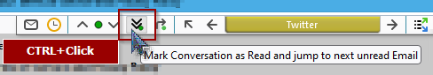

QuickFolders.org
| Home Installation Version History Premium Functions FAQ + Tips Support QuickFolders! Screenshots Bugs + Feature Requests quickFilters Menu On Top GDPR + Impressum |


Version History
Latest News (29/10/2021) - Thunderbird 102 Compatibility
QuickFolders 5.12 is fully compatible with Thunderbird 102. In rare cases there may be problems when updating from older versions of Thunderbird, see their bug 1732515. If there are issues when installing, please read the instructions here.
Thunderbird 102 is using the same system for permissions as the previous versions, and QuickFolders still has to use experimental APIs to achieve its full functionality. So you will see a message asking for full permissions. There is an article on Mozilla support explaining the detail. In order to become long term sustainable I am introducing the new 2-tier Licensing system from this platform onwards. Read the new comparison chart to see which functions you get depending on your license.
In short: As Thunderbird follows Firefox which moves toward web extensions, a new technology has emerged that restricts Add-ons to use only managed entry points (APIs) for adding functionality - these are still largely incomplete as regards the many things Add-ons can actually add to the application. That's why Thunderbird allows using "experimental APIs", which is essentially a wrapper technology that allows (substantially modified) classic extensions to run on this system.
This also meant splitting the code base for the older versions and having separate releases (it's not possible to combine both system in a single Add-on). Essentially new functionality will go into the newer versions of QuickFolders (5.0 and higher) whereas I back-port bug fixes and some selected functionality to the legacy versions of QuickFolders (4.18 and higher). Both versions will automatically update the correct user base as usual.
For the list of latest changes click here. For Thunderbird 68, click here.
Thunderbird 68 support has ended on thunderbird.net
Unfortunately thunderbird.net does not accept updates for legacy versions anymore - they only support the new "Mail extension" format and our "mail extension with experimental APIs" which is a workaround for missing advanced features.
From of version 4.23 forward you have to install such legacy versions from the github releases page.
Some Highlights
- [5.2] [4.19.1] Support moving folders with the quickMove function. Very handy for re-organizing your folders tree.
- [5.1] Improvements in license handling and many regression fixes for Thunderbird 78.
- [5.0] First version compatible with Thunderbird 78.
- [4.18.2] Fixes for Recent Folders and Skip unread folders functions.
- [4.17.5 - 4.17.1] Single-key shortcuts for navigation. Fixed many regressions Tb 68 vs Tb 60. Many locale fixes for various translations.
- [4.16] Subfolder menus do not expand - A regression has caused subfolders (2nd and higher level) not to be expanded on the drag / click context menus of the folder tabs. The quickMove / quickJump box had stopped working. 4.16 fixed it and brings back the automatic suggestions that are shown during typing a folder name. Fixed: creating new subfolders from QF menus fails because XPCOMUtils.generateQI was removed.
Premium Feature: quickJump
A super quick way to find folders and Tabs by entering part of their name:
Click on the quickJump button (or use the configurable keyboard shortcut SHIFT+J
in QuickFolders Pro):

A Search box opens where you can type a folder name and hit [Enter]. Or hit the [Down] key
or mouse to select from the list of suggestions.

If exactly one matching folder is found Thunderbird will jump to it immediately. If multiple folders match a dropdown will show.
Selecting the folder (or tab) name will jump to the folder.
Select Find Folder from the menu again if you want to hide the search box.
Premium Feature: quickMove
Uses the same button for moving mails to any folder:
Simply drag some mails up to the quickJump button (or use the configurable keyboard shortcut SHIFT+M in QuickFolders Pro), and then type the name of the target folder. The name is shown in red to indicate that mails are going to be moved. Note that you can gather mails multiple times and even from different folders - the mails won't be moved to the destination until you click on the suggestion on the search box.

Start typing to get relevant folder suggestions:

Clicking a folder name will move the dragged emails to the new destination and
complete the quickMove operation.
You can also use this button for jumping to a folder by clicking it (quickJump).
To access child folders of any given folder use the key "/" - just enter the first characters of the parent folder followed by "/". This will additionally give you the option to create new subfolders before you move the mail.
The Escape key will hide the red box temporarily. You can right-click the button
to display more options and the list of emails that are lined up for moving:

You can open the emails in a tab by clicking them.
Major Features
Palette Types
It is now possible to select independent palettes for the different tab states
selected / hover / dragover / uncolored.:

this way the signalling of important states (such as the current folder) can be made to stick out so it can be located much more easily.
Also the new architecture of palette options makes it easier to add different palettes in future versions.
Version Details
All dates are displayed in UK format: dd/mm/yyyy - you can request any version that is marked as not released or any old version listed; just send me a personal email from the quickfolders options dialog / on the Support tab - [(Jump to Screen Shot)].
-
Version 5.15.1 - 22/12/2022
If you can see this box then your QuickFolders Pro license has expired!
QUICKFOLDERS PRO - NEW YEAR SALE - RENEW FOR 25% OFF
Catch this 2022 sale offer which reduces a quarter from the price from December 22nd to January 8th! Renew or extend your license and pay 7.50$ instead of 10$ for your renewed QuickFolders Pro license.
 You can extend or renew your license directly from QuickFolders - it will transmit your existing license key in order to
create the new license. Simply use QuickFolders Options / QuickFolders Pro tab and the Extend License button.
You can extend or renew your license directly from QuickFolders - it will transmit your existing license key in order to
create the new license. Simply use QuickFolders Options / QuickFolders Pro tab and the Extend License button.
Support the future of QuickFolders and keep enjoying unlimited Premium Features. Simply click on Renew License on the QuickFolders toolbar.

You can also extend your license (without losing a single day) by clicking on the Extend License button on the QuickFolders Pro tab up to 30 days prior to your previous license expiry.
As a thank you for my loyal supporters: if you missed the expiry date I will still give you a whole year in the renewal even if your expiry date is in the past.
QUICKFOLDERS PRO - NEW YEAR SALE
Save 33% on the regular price and support the QuickFolders project from December 22nd to January 8th! This deal will only be offered for this limited time period, to give you too a chance to support the QuickFolders Project. QuickFolders needs to payroll improvements for Thunderbird 102 to be as fast and efficient as possible.
Support the future of QuickFolders and enjoy unlimited Premium Features. You can purchase a license from QuickFolders options, using the Licenses tab. It's super easy and helps future proof this Add-on. Use QuickFolders Pro on as many Thunderbird installations as you like as long as it has your licensed email address as a Default Identity.
Install the latest QuickFolders version and then click the Buy License item from the QuickFolders Pro tab on the Options dialog. If you prefer, you can also buy a license on the web shop directly: FastSpring Web Shop

Go Pro! - NEW YEAR SALE
Save 33% on the upgrade price and support the QuickFolders project from December 22nd to January 8th! QuickFolders needs to payroll improvements for Thunderbird 102 to be as fast and efficient as possible. This deal is only available to QuickFolders Standard users within this limited time period. Treat yourself to the premium functions and help financing QuickFolders' future compatible with Thunderbird 102.
The regular upgrade price is around $9.00 plus taxes, this reduced price is $6.00 - check the shop site for your personal price depending on your region. A standard license or renewal of it now costs also around $6.00.
As a Standard license owner, you can upgrade your license to Pro level by clicking on the "Upgrade to Pro" button in QuickFolders Settings on the License tab:

For a feature comparison between Standard and Pro please check this comparison chart.
- [issue 333] A regression caused all text in popup menus (subfolders / commands) to appear missing for most users. This was because of the default size of 0 being falsely applied as a literal value.
- [issue 329] Fixed inconsistent menu font size when dragging mail to a subfolders of a QuickFolder
- [issue 315] Removed the term 'Orphaned Tabs' in all User Interface texts
- Modifications to internal code for triggering the quickFilters filter assistant to avoid "monkey patching" (overwriting) Thunderbird internal functions. These changes are needed from the next version of quickFilters (5.7 and higher) onwards to avoid duplicate prompts for filter creation.
- [issue 328] Fixed: Using quickMove to move emails from different source folders didn't remove them from the menu
Maintenance Fixes - 5.15.1
Improvements
Bugs Fixed
-
Version 5.14 - 14/11/2022
-
You can now set the icon color on the current folder with the custom background. This can be used to address coloring problems with third party Thunderbird themes. [issue 317].
-
New Function for QuickFolders Pro users to mark folder as read and jump to next unread folder. [issue 320] Hold down
CTRL while clicking on the button "Mark Conversation as Read and jump to the next unread Email": - Fixed: The Compact Headers Add-on painted over icons in Current Folder toolbar. [issue 314]
- Fixed a problem with missing quickFilters buttons on Current Folder toolbar. This requires quickFilters to be updated to version 5.6. [issue 316]
- Fixed: Tabs for Unified folders can falsely be reported as invalid, unless Unified folders are currently visible in folder tree. [issue 322]
Improvements
Bugs Fixed
-
-
Version 5.13.1 - 28/09/2022
- [issue 312] Fixed in 5.13.1: When moving an email to a submenu via the popup folder that shows direct child folders this can generate an empty duplicate without subject line.
-
[issue 306] New option to restore unread or force read status on messages when dragging them to QuickFolders.
-
[issue 308]
quickFilters assistant will not fail anymore when moving mail to IMAP folders.
Here is a video that describes the process of creating filter rules using the quickFilters assistant - this is to automate moving mail
to your favorite folders.
- With the Add-on quickFilters installed, click on the button in the toolbar to activate its assistant.

- Drop an email to a QuickFolders tab (or use the quickMove button).
- The quickFilters assistant will show up and give you a choice for creating rules to automatically
move similar mails.

- With the Add-on quickFilters installed, click on the button in the toolbar to activate its assistant.
- [issue 309] quickFilters assistant will not fail anymore when moving mail to QuickFolders on IMAP. There used to be a problem with synchronisation while waiting for the IMAP server to complete the mail move operation.
- Increased max version to 106.0
Maintenance Fixes
Improvements
Bugs Fixed
Miscellaneous
-
Version 5.12 - 17/08/2022
Please note that QuickFolders is compatible with the latest version of Thunderbird (102) - if you get a message that says otherwise after updating from earlier versions (e.g from version 91) or if QuickFolders cannot be enabled with the blue slider, please remove it and reinstall it via "Find more Add-ons" on the Extensions tab of Add-ons Manager:
First try if you can enable QuickFolders using the slider:

If this doesn't work, then removing the Add-on via Thunderbird the Add-ons Manager will still retain your settings:

In the Search box, enter the term QuickFolders, and press the Enter key:

Then click on the Add to Thunderbird button:

-
[issue 299] Going forward, QuickFolders does not open a version history tab by default. You can restore the old behavior in advanced settings:
Maintenance Version 5.12.1 - 20/08/2022
-
-
[issue 292]
Close quickJump box after using the
= shortcut key (to display recent folders). - [issue 291] Update Thunderbird's "Move to Again" and "Copy to Again" menu items when moving or copying mail through a QuickFolders method.
- [issue 296] Exchange account validation - you can now validate a license key even if the licensed email is configured for an Exchange account via 3rd party Add-ons such as Owl or Exquilla. This works from Thunderbird 98 forward.
-
[issue 297]
When using the search box during quickMove / quickJump and looking for parent folders you
can now enter composite names by typing the beginning of each word delimited by a space.
For Example you can now enter "mu fl/" to list all subfolders of a folder "Munson-Fletcher".
Valid delimiters of existing folder names are
- _ @ + & . andspace .
Improvements
Bugs Fixed
Version 5.11 - 24/07/2022
Please note that QuickFolders is compatible with the latest version of Thunderbird (102) - if you get a message that says otherwise after updating from earlier versions (e.g from version 91) or if QuickFolders cannot be enabled with the blue slider, please remove it and reinstall it via "Find more Add-ons" on the Extensions tab of Add-ons Manager:
First try if you can enable QuickFolders using the slider:
If this doesn't work, then removing the Add-on via Thunderbird the Add-ons Manager will still retain your settings:
In the Search box, enter the term QuickFolders, and press the Enter key:
Then click on the Add to Thunderbird button:
-
[issue 283] Fixed: Significant slowdown of Thunderbird 102 with QuickFolders
There is some inefficiency in Thunderbird code for the folder tree which can be exacerbated by QuickFolders. I have removed as many function calls as possible without impacting on functionality. On startup some context menus have to be generated for efficient drag+drop; this is now postponed to a later stage to yield some processing time to the User Interface.
- [issue 279] Fixed: Thunderbird 102 - current category is not remembered / selected; in this solution I store the current category of each tab (folder and messages) whenever a tab is opened / moved or closed. This information is only stored for the last Thunderbird window that is closed.
- [issue 280] Customized folder tree icons stopped to work independently of QuickFolders tabs with icons. Custom icons are now back!
- [issue 287] Fixed the removal of invalid (orphaned) tabs through the tool menu command "remove invalid tabs". Also renamed it for clarity: this used to be called "find orphaned tabs"
- [issue 284] Recent folders menu doesn't show or takes a very long time in Thunderbird 102 - There is some inefficent code in Thunderbird 102 at the moment, so I have started to use their own internal function to generate this; I am hoping there will be some improvement added in Thunderbird itself in a later version and will remind the core team.
Improvements
Bugs Fixed
Known Issues / Work in Progress
Version 5.10.3 - 14/07/2022
QuickFolders is now compatible with Thunderbird 102, the official new version for 2022 / 2023. To help fund this Add-on for the next year and the unavoidable changes necessary to switch over to an API based approach, please buy a QuickFolders Pro license
-
[issue 281] this maintenance version will be able to reconstruct tabs after upgrading from Thunderbird 91 to 102 even if the server and username have been modified due to bug 1573690. The previous version failed with reconstructing these on IMAP folders.
To automatically rebuild (and avoiding invalid tabs) is only possible if 5.10.1 was previously run on an older profile (Thunderbird 91 or older)
If you already upgraded to Thunderbird 102 previously and still have invalid tabs, you can follow the detailed instructions at the last comment on [issue 281]
- [issue 283] Thunderbird 102 is severely slowing down compared to Thunderbird 91 with QuickFolders installed. I am currently working on a permanent solution - if you would like to test preview versions you can download them at the Github issue linked above.
-
[issue 281] 5.10.2 - this maintenance version will be able to reconstruct tabs after upgrading from Thunderbird 91 to 102 even if the server and username have been modified due to bug 1573690. To successfully reconstruct (and avoiding invalid tabs) is only possible if 5.10.1 was previously run on an older profile (Thunderbird 91 or older)
If you already upgraded to Thunderbird 102 previously and experience invalid tabs, you can now generate troubleshooting information via right-click QuickFolders Commands / Tab Specific Properties... This will copy the assumed account and the (invalid) folder URI to the clipboard.

For reference you can click on any real folder in the folder tree and then SHIFT+Click on the QuickFolders tool icon, then select Debug / Copy current folder info! This will copy the account and correct expected URI to the clipboard. By comparison of these data points it I can fix your folders through exporting the folder configuration and then text search+replace the differing URIs (or by simply inserting the correct account)

Detailed instructions can be found at the bottom of: [issue 281]
- Fixed the missing close [x] icon on the advanced tab properties panel, which was hidden by style changes in Thunderbird 102.
- Fixed icon coloring for the tools and QuickFolders Command menus in dark mode (Thunderbird 102).
- [issue 281] 5.10.1 - this maintenance fix stores the account id for every tab. When upgrading to Thunderbird 102, this can potentially rename the servers due to bug 1573690 - then the account can be used for reconstruction of invalid folders. I am currently working on code that can help in fixing this problem automatically.
- Fixed icon spacings in folder popup menus in Tb102.
-
Increasing maximum TB version for next ESR - Thunderbird 102.* is planned to be supported from now on.
Also increased minimum version to 92.0 - because of new APIs 78 will not be supported with new features / bugfixes.
If you consider updating to Thunderbird 102 please make a backup of your prefs.js - Thunderbird can potentially generate invalid tabs, and this can be repaired much more easily by knowing certain server settings that are stored in prefs.js preceding migration. See [issue 281] for detailed information!
- [issue 272] Implemented new folder listener interface. The new version of Thunderbird implements a different folder listener interface. This meant a lot of functions (such as updating URLs when renaming folders and updating their connected tabs or updating unread counts on the tabs) were broken.
- Fixed repair folder code.
- Fixed support site links in Options Dialog.
- [issue 263] If Preferences are open in inactive Tab, clicking the options button now activates it.
- Added title to preferences tab
- [issue 265] Reading list: If an email cannot be found due to an invalid / deleted folder, QuickFolders wasn't displaying the search dialog.
- [issue 262] Fixed: Recent folders on Navigation Bar (Current folder toolbar) outdated when dragging emails
- Fixed: support mail to... description in options dialog
- [issue 268] Fixed: When clicking the Current Folder Bar, it showed an old list of subfolders
- Removed legacy settings dialog and associated menu item
- Removed legacy code (supportsMap)
- [issue 281] Updating to Thunderbird 102 can generate invalid tabs - make sure to backup prefs.js before updating in order to correct this problem more easily. Some accounts in your profile may be affected, so it is a good idea to mitigate this problem.
Maintenance Version 5.10.3 - 14/07/2022
Known Issues
Maintenance Version 5.10.2 - 07/07/2022
Maintenance Version 5.10.1 - 05/07/2022
Version 5.10 - 12/06/2022 - Thunderbird 102 Specific changes
Improvements
Bugs Fixed
Miscellaneous
Known Issues
Version 5.9.1 - 05/04/2022
-
Simplified recent folders menu behavior for keyboard navigation.
[issue 254] The new [=] shortcut key of quickMove/quickJump showed an arrow to visit child folders, which meant that the folder itself could not be opened without mouse, which impeded the workflow.
I have decided to instead not show subfolders for these recent folders as it doesn't add much value for what essentially should be a repeat operation. I have also extended this to the other recent folders menus (e.g. on the recent folders tab).
One can still restore the old behavior (of showing subfolders) by setting the config setting extensions.quickfolders.recentfolders.subfolders = true. To do this you can open QuickFolders General Settings and right-click the Recent Folder Tabs checkbox:

- [issue 252] Fixed: Tabs with invalid folder address can break search results. This can happen if you exclude accounts from the search after recreating a profile with different spelling.
- [issue 255] Fixed: CTRL Right-clicking on the active folder can create multiple instances of the folder commands submenu.
- [issue 241] using quickJump / quickMove via shortcut - hitting Enter will now always select the last successful location (even when the name is ambiguous) and not the top item of the menu. To use the first item of the menu using Enter the menu hast to be visible - either by starting to type or pressing arrow-down.
-
[issue 242]
Use '=' key for recalling folders from recent quickMove / quickJump operations
When using the quickMove or quickJump search box you can now access folders of its previous jump / move operations by typing "=" as the first character.
- [issue 236] Convert options dialog to pure HTML. Amon other things, this fixes the color pickers that have stopped working on Mac. Long term, all Dialogs and User Interfaces need to be converted to HTML to become future proof and pure API based. There are still things that cannot be done with HTML right now (such as folder dropdowns that aren't cut off at the toolbar borders), so this is an ongoing effort for the predictable future.
- [issue 232] Fixed: When Adding a category to a tab, another category may be replaced
- [issue 235] Fixed: quickJump may fail if "Compact mode" in folder tree is enabled.
- [issue 220] Fixed an issue with license validation (alias identity support).
- Fixed "change order" dialog.
5.9.1 - Maintenance Fixes - 05/April/2022
This maintenance version will be released shortly.
Improvements - 30/03/2022
Bug Fixes - 30/03/2022
Version 5.8.3 - 03/11/2021
- Fixed in page links for users with licenses! Before licensed users were directed to the top of a page instead of the correct location (such as the feature comparison list or current version info)
- Improved speed of license validator for Thunderbird 91.2 and later.
- Improved readability for menu items on (license-) restricted tabs.
Version 3.8.3 - Maintenance version - 03/11/2021
- - [issue 5] [issue 67] [issue 77] [issue 105] Fixed: Long folders menu scroll issues - when the subfolders list of tabs were too long to fit on screen, dragged mail couldn't be dragged down into the clipped off list. The menu did not scroll down.
-
[issue 205]
When clicking "get Messages" from any tab, QuickFolders used to also jump into the folder.
This behavior is actually not desired, as you may have filter rules defined which remove mail from the Inbox
so jumping into the Inbox is not useful when new mail is downloaded.

- [issue 191] Support large icon in QuickFolders toolbar buttons for high resolution displays.
- [issue 211] Fixed: move Folders in quickMove fails in Thunderbird 91. You can now again drag (multiple) folders from the tree to the quickMove button in order to relocate them. Or use the Shortcut Shift+M if you have a QuickFolders Pro license.
-
[issue 209]
Fixed: Tabs in Options Dialog became illegible in Thunderbird 91 when using
dark themes with bright text.

- [issue 203] Fixed: When the quickFilters Add-on activates its assistant, all icons on left to the tabs on the QuickFolders toolbar turned white.
- Fixed: In Thunderbird 91, background area behind current folder toolbar does not show correct background color from lightweight theme, even when lightweight support is enabled.
- Fixed: The History Tab was not displayed anymore when updating QuickFolders.
- [issue 204] WIP - Thunderbird 91: Background of QuickFolders toolbar doesn't support some themes when set to transparent
-
[issue 208]
Upgrade from TB 78 to 91.1.2 sometimes leads to invalid / "orphaned" tabs.
For the moment, you should be able to resolve these by clicking a tab with the "broom" / invalid icon
or by running the tool command "Find Orphaned tabs.".
Should this not give the desired results, then you can export your tabs via the license tab or on the Advanced tab using the [Copy Tabs] button and send me the file so I can help you fix this. - [issue 217] Tools Menu icons black in dark themes - Win10
QuickFolders 5.8.2 - Maintenance Version - 21/10/2021
Improvements - 5.8.1 - released 18/10/2021
Bug Fixes + Miscellaneus - 5.8.1 - released 18/10/2021
Known unresolved issues / Work In Progress
Version 5.7.2 - 04/09/2021
- Fixed in 5.7.2: When the quickFilters Add-ons activated its assistant, all QuickFolders icons on left to the tabs turned white.
- Added max version (Thunderbird 91.*) as mandated by new policies on ATN.
- [issue 199] Fixed: when looking for parent folders using the syntax parent/parent/searchfolder, parent folders with name being only a single character long were not included.
- [issue 197] Instructions on empty toolbar get duplicated on folder change.
- Removed "workaround" experimental APIs (notifications, accounts)
- [issue 187] Implemented a QuickFolders Standard License. Apart from the unpaid version, there will be now two different licenses, QuickFolders Pro and Standard, and the unfunded version will have a number of restrictions. Most importantly, no more than 10 tabs are supported without any license. This is necessary in order to fund ongoing and future work so that the Add-on won't be lost to all users when Thunderbird moves away from experimental APIs. Standard Features will be listed here. Read the new comparison chart to see which functions you get depending on your license.
-
[issue 114] Make QuickFolders compatible with Thunderbird 91 (ESR 2021/22). This is the list of issues found and fixed so far:
- Fixed the missing (and badly styled) [Buy License] button at the bottom of the options dialog. this is done by loading a separate style sheet link element into the shadow DOM.
- Fixed: showing the debug settings (and other advanced settings) via a small window that filters "about:config" stopped working in Tb91.
- Fixed: missing icons on sliding notification bars
- Removed deprecated fixIterator constructs
- [issue 189] Fixed: No longer able to move a message by dropping it on a quick folder tab the function copyMessages was renamed in Tb91
- [issue 190] Fixed dragging the envelope from current folder toolbar (Navigation bar)
- Simplified and improved splash screen.
- [issue 184] Update Notice - [What's New] button was badly visible when using different QF theme than flat style.
- [issue 166] 3rd party themes - Current folder toolbar colors are incorrect until Refresh visible tabs command.
- [issue 186] Theming make some items in options screens hard / impossible to see - improved visibility of dropdowns in options screen when using dark (and third party) themes.
- [issue 185] On installation / sometimes restart or update of _other_ add-ons category is reset to "all".
- Ongoing work of Rewriting code to use APIs instead of Thunderbird's internal functions see [issue 147] for up to date detail.
- Removed obsolete rsa code module
- Default event for popupmenus changed from click to command to better support keyboard only navigation. [extensions.quickfolders.debug.popupmenus.folderEventType]
QuickFolders 5.7.2 - Maintenance Version
QuickFolders 5.7.1 - Maintenance Version - 28/08/2021
5.7 - released 10/08/2021 - Improvements and Important Changes
Bug Fixes + Miscellaneus
Version 5.6.6 - 11/07/2021
-
[issue 177]
Fixed: Unreliable search if
space and- characters are combined in the search string - [issue 174] Main QuickFolders toolbar was hidden in single message tabs by default. Changed to being visible by default and added a setting to QuickFolders General settings.
- [issue 176] Hide instructions on how to set up QuickFolders at startup (for users who already have set up tabs)
-
[issue 155] Significant new search features have been added to the quickMove / quickJump function. For help on these, you can now click the [?] symbol to the right of the search field.

Support entering multiple words in a search string to find longer folder names that are composited, such as "Fred.Flintstone" "Invoices June 2020" "Research+Development". These can now be found by entering the starting letters of the words within the folder name, in any order. e.g. "f f" "2020 inv" "Dev Res".

The following characters are regarded as word boundaries and don't need to be typed:
_ . - + & @

This can also be combined with the parent folder syntax by entering the parent folder start followed by a forward slash
/ :

The new character
> can be used to skip any part within the path and if you do not know their order within the folder hierarchy. -
When the search box is opened there is a new button to display a help panel:
-
The update Splash screen with the translated list of new features which used to be opened on update will from now on not be displayed automatically anymore. Instead there is a message on the QuickFolders button - click it once to read the latest news when you want.

The splash screen can also be re-opened again from the tools menu:

- Improved overall performance for typing by optimizing the keyboard listener that handles global shortcuts.
-
[web extension migration] Improved many functions that worked via accessing the "most recent Thunderbird window" and replaced them with event notifications that propagate to every window. This uses the Notification Tool library and the background script (a mechanism of the new API based "mail extensions" model).
This way all Thunderbird windows (if you work from multiple windows) will be updated correctly when doing one of the following actions. All these now work simultaneously and update in multiple Thunderbird windows.
- rename a tab
- move a tab positionto a different position
- delete a tab or remove it from or add it to a category
- change the layout of all QuickFolders toolbar elements from the options dialog (themes, colors)
- rename QuickFolders categories
- change the theme / buttons of the Current Folder Bar
- change options of where to display the Current Folder Bar (main window, message tab, single message window)
- changes to the license when entered / validated
- unlocking features such as the advanced / tab-specific properties when a license key is entered
- [issue 172] Fixed (in v5.6.5): quickMove result paths are only showing last 2 folders in path when only a single search word is entered.
- [issue 150] Unwanted new line characters "\n" were displayed in some strings in version 5.5.2
-
[issue 167]
Fixed: Unreadable colors of QuickFolders toolbar font and Navigation bar icons in Linux.


-
Added instruction text on empty toolbar which was missing since Thunderbird 78 migration:

- [web extension migration] Licenser code migrated into background script.
- Added wrench button on Add-ons Manager to access settings.
- Other ongoing work of Rewriting code to use APIs instead of Thunderbird's internal functions see [issue 147] for up to date detail.
- Moved accounts + permissions code into my own experimental library as users were not prompted to auto-updated due to added permissions.
Maintenance Items - 5.6.6
Improvements
Bug Fixes + Miscellaneus
Version 5.5.2 - 28/04/2021
- [issue 148] quickMove: parent folder containing an underscore not suggested as parent if typed from fully this is a regression caused by changes in [issue 135] which allows for entering parent names by entering text within the string if that starts with an underscore or space - e.g. to find all child folders of "001_Test" you could just type "tes/". The regression caused it not to be suggested when typing "001_tes/" as it only would evaluate the substrings "001" and "Test" as possible parents.
- In some locales the character is replaced with encoded unicode entry \u00BB in Create subfolder menu item
- In Thunderbird 89, the options button was not displayed in Add-ons Manager.
- Hotfix: [issue 144] Fixed: Mark folders + subfolders read stops at first generation (direct child folder) mails and potentially may have affected parent folders, too.
- Fixed: The tool menu item "Change the order of tabs" did not update the toolbar after clicking Ok. To make changes visible one had to click "Refrehs Visible tabs"
- Rewrote the legacy style localization to use the modern method which is a prerequisite for converting the Add-on to a "mail extension" in the future.
- Version 5.5.1: Completed Hungarian, Simplified Chinese and Catalan locales.
- [issue 135] quickMove / quickJump: When using "/" for parent folders searching for substrings should work better... The Search algorithm now recognizes Underscore _ and Space within folder names so that parent folders with prefixes such as "01_test" can still be found without knowing the number (type "test\subfoldername" to get a match in this example).
- [issue 134] Feature Request: Escape key to "Cancel quickMove" completely. Before this change, Cancel would hide the search box but keep the list of mails queued to be moved so that more items could be added later. If necessary, the old behavior can be restored in the Advanced search settings dialog.
-
[issue 132]
In a single message tab, quickMove used to redisplay the mail after moving it with quickMove.
This behavior has now been changed on request to go to the next email.
If necessary, this new behavior can be changed via the advanced search settings button
in the Single Message Tab box on the QF Pro settings tab.

- Increased maximum subfolders in a dropdown menu from 100 to 250.
- [issue 136] Fixed: There were no folder suggestions during quickJump / quickMove while viewing mails in a virtual folder view (such as search results / or after open message in conversation). This was a side effect of changes from [issue 57].
- [issue 140] Fixed: Restriction to current server unexpectedly suggests creating new subfolder on excluded accounts. This only happens if there are no other matches found for the folder search pattern.
- Changed folder tree shortcut from F7 to F9 (consistent with Thunderbird 68). Push F9 to make the folder tree visible or quickly hide it.
Maintenance Items - 5.5.2
Maintenance Items - 5.5.1
Improvements (5.5)
Bug Fixes (5.5)
Version 5.4.2 - 29/03/2021
- Added quickMove advanced settings panel for the following new features:
[issue 118], [issue 57] Restrict quickMove results to current server. With this option activated when searching only results from the currently selected account are included in the search.
I also added a list of accounts to explicitely exclude selected servers from search results.[issue 74] User Interface to enable silent mode - this disables notification after moving mails.
[issue 119] The maximum number of search results can be changed from 25.

- [issue 103]
quickMove now also supports copying folders. To copy a folder, hold down the CTRL key while you drop it
on the quickMove button. Queued folders are now also properly listed in the quickMove menu:

You can use this panel for a number of functions, such as not showing the unread status or excluding a folder (and optionally also its subfolders) from the quickMove search results. You can also prefill a different from address and to address when writing new mails. To display, right-click any tab and select"Tab-secific Properties" from the QuickFolders commands submenu. - Improved layout of numeric inputs in Settings dialog.
- [issue 117] Added color picker for text color in tab-specific properties.
- [issue 115] Fix restoring of config values. Some general / layout settings were not restored properly even when they were saved during backup.
- [issue 116]
Custom Text color in tab-specific is not set on tab.

- Regression in 4.5 (fixed in 5.4.1) [issue 123] Fixed: An error in the French translation leads to the Settings screen not loading.
- [issue 115] Fixed: Restore does not load some general / layout setting.
-
[issue 114] Make QuickFolders compatible with Thunderbird beta 88.0b1
- Fixed: Support Pages did not open anymore as content Tabs have a different parameter set.
- Fixed: layout of advanced tab properties broken due to deprecated grid element.
- Fixed: Copy / Move folders uses new MailServices.copy object
- 5.4.2: bumped max version to 88.0b2 so current beta users can keep testing QuickFolders.
Removed legacy iterators for folders
If you find more regressions associated with Thunderbird 86 or higher, please report them at issue 114 linked above.
Improvements
Bug Fixes
Thunderbird 78 Regressions, Tb 88 and beyond
Version 5.3 - 23/02/2021
- [issue 106] Thunderbird 78 regression: backup did not save general / advanced / layout settings.
-
[issue 108] Thunderbird 78 regression: Some changes in options window were ignored and not stored.
Also, many layout settings were not updating immediately through the User Interface, because of broken instant apply settings.
Settings that could not be changed from the options screen:
Premium / quick move display format
General / Message Navigation / Go to next unread mail -
[issue 111]
Paint Mode stopped working in Thunderbird 78. You can now use Paint Mode again from the
QuickFolders tools menu to change the colors of multiple tabs. (For best results use the flat style theme).
Activate paint mode,

then select a color from the palette and click on the tabs you want to change:

The colors displayed depend on the selected "Palette for Colored Tabs" which is a global setting and offers 3 choices (Standard, Pastel and Night Vision for dark themes). -
[issue 88]
Fixed highlighting of drop targets when dragging mails into a subfolder.

- [issue 82] Improved sorting of search results during quickMove / quickJump. The results are now sorted mainly based on alphabetical order (with boosts for folder names that start with the searched text and completely matching the search text). As before, partial strings are only matched from a length of at least 3 letters.
-
[issue 109]
Mark Messages read in Folder and the subfolders recursively did not display as expected.
This additional menu item that can be used to set all mail in subfolders to read was only displayed if the actual folder of the tab itself had no unread emails, and only child folders had them. Configure this command in QuickFolders settings / Advanced / Menu Configuration / Mail Commands:
- [issue 37] When no match is found using the "/" in quickMove box, display "No matching parent folders!" instead of "..."
- [issue 101] If multiple categories are selected, closing QuickFolders settings reverts to "Show All".
- [issue 107] Restoring general / layout Settings only works if option for restoring folders also active.
- [issue 110] "Tab-specific Properties" overwrites To Address when clicking Write from Address Book.
- [issue 112] Reading List menu - Add current Item not working
-
[issue 114] Make QuickFolders compatible with Thunderbird beta 86.0b3
If you find more regressions associated with Thunderbird 86 or higher, please report them at issue 114 linked above.
Removed grids from options screen to suport Thunderbird 86 and higher.
Using renamed function FtvItem for creating Recent folders list.
Thunderbird 78 Regressions
Improvements
Other Bug Fixes
Version 5.2 - 22/01/2021
-
[issue 75]
- Support moving folders with the quickMove function. You can now move one or multiple folders by dragging them
from the tree to the quickMove button or hitting Shift+M (with a Pro License) while the folder tree is highlighted.
Up until now, you could only move folders by holding Shift and dragging to a QuickFolders tab, which was a significant limitation.

-
[issue 92]
- do not overwrite 'To address' from advanced tab properties when replying to an email!
With QuickFolders Pro a to address can be auto-populate in the advanced per-folder settings. This should not happen when replying to an email; from no on it will only populate when writing a new or forwarding mails:

- [issue 94] - Tb78: Tab-specific properties displayed in incorrect screen position.
- [issue 23] Fixed: quickMove aborts with "Nothing to do: Message is already in folder" if the first mail in the selection is already in target folder. This may happen if you drag mails from a multi-folder view such as a search results window. It can also happen if you execute the quickMove command after a while and you (or a filter) have moved some of the mails to the target folder already.
- [issue 96] Drag and drop issue in Thunderbird 85 beta. Although I fixed this particular issue I make no guarantees for any functionality if you are using beta versions. I can only support the current ESR version Thunderbird 78.1 - 78.* fully,
Improvements
Bug Fixes
Version 5.1 - 11/12/2020
- In order to maintain full functionality for the next 12 months forward, QuickFolders had to be rewritten as a mail extension with experimental API, which will require full permissions on installation. As regards being allowed to do stuff, it is actually not different with any classic Add-on: they always had full access to all functions within Thunderbird. The modern mail extensions will have much more tightly managed permissions - eventually QuickFolders will also use this more modern approach - but the APIs for this have to be created and accepted by Mozilla first. This means a lot of ongoing work for the nexty 12 months forward - please support this with a license or donation:
- You can buy a license here. This is the preferred way of funding all the ongoing work and improvements.
- If you are not ready for a license you can also donate from here
Thunderbird 78 Conversion
- [issue 72] Fixed: Category "_Uncategorized" erratically showed all categories after moving a folder to another category
- [issue 76] Fixed: Recent Folders List is not updated until Thunderbird is closed and reopened
- [issue 80] Fixed: Recent Folders list not updated when moving email using drag and drop to the folder tree. I have made the updating of this folder time stamp somewhat more aggressive, but avoiding to add folders like Inbox, Sent, Archives, Drafts, Junk, Trash and Templates because they would always end up on top.
-
[issue 79]
Fixed: Drag over color + Dropmarkers when reordering Tabs not working

This was caused by an experimental style selector [-moz-drag-over] which has been now removed by Mozilla due to little take-up of the HTML community. I had to rewrite these parts using pure JavaScript. - [issue 81] Fixed: Current Folder Toolbar display - text is always black
-
[issue 84]
Fixed: Can't drag envelope icon in Navigation bar (a.k.a. Current Folder) to a folder / QuickFolder drop target.
Also the Navigation Bar is hidden if multiple mails or a thread is selected.

Drag envelope icon to move the currently selected mails to these targets, or into the folder tree if needed. - In the dialog "change order of tabs" the Up and Down labels on the buttons were not rendered for some yet unknown reason - this is now worked around by removing the button styling from these elements
Bug Fixes
Improvements
Miscellaneus
Version 5.0 - 17/11/2020
This is the new version of QuickFolders whis is fully compatible with Thunderbird 78.
- In order to maintain full functionality for the next 12 months forward, QuickFolders had to be rewritten as a mail extension with experimental API, which will require full permissions on installation. As regards being allowed to do stuff, it is actually not different with any classic Add-on: they always had full access to all functions within Thunderbird. The modern mail extensions will have much more tightly managed permissions - eventually QuickFolders will also use this more modern approach - but the APIs for this have to be created and accepted by Mozilla first. This means a lot of ongoing work for the nexty 12 months forward - please support this with a license or donation:
- You can buy a license here. This is the preferred way of funding all the ongoing work and improvements.
- If you are not ready for a license you can also donate from here
Thunderbird 78 Conversion
- Removed backwards compatible (shim) code and all code implementing cross-compatibiliy for SeaMonkey and Postbox. The code base had to be forked into a new branch, so if I backport bug fixes this will double my work for the legacy Thunderbird users.
- [issue 35] "Skip Unread Folder" hides "Add star" function... the Shortcut for skipping unread folders works even without pressing the Shift key
-
New icon layout base on the new Photon Design System for Thunderbird. The fantastic new Icon conversion was kindly and expertly done by Richard Paenglab.

The Navigation Bar (current folder toolbar) has also been redesigned:

Apart from that, all menu configuration as well as theming options and colors for the QuickFolders Tabs are still available:

Folder tree icons can also still be overwritten with external icons (here is a small icon collection for QuickFolders Pro users)

- Removed nsIRDFService dependencies
- rewrote preference bindings in all dialogs
- Added new Thunderbird 78 compatible Icons (svg)
- rewrote search algorithm for missing mails in reading list - clicking on a missing mail there brings up a search dialog. Unfortunately this was not populated with meaningful search conditions
- Klaus Buecher (@Opto) did the initial conversion of all XUL interface and fixed some bugs. John Bieling (from the Thunderbird team) helped with the WindowLoader implementation and fixing the broken preferences. Many thanks to both of themn for their fantastic work!
Changes / Work Items
- Any dragover styling (special color, dropmarkers when moving tabs around) is currently broken - this is caused by an experimental style selector which has been now removed by Mozilla due to little take-up of the HTML community. We will need to recode these parts using JavaScript.
Known issues
Version 4.23 - WIP
Please note that QuickFolders is compatible with the latest version of Thunderbird (91.4) - if you get a message that says otherwise after updating from earlier versions (Tb68 or Tb78) or if QuickFolders cannot be enabled with the blue slider, simply remove it and reinstall it via "Find more Add-ons" on the Extensions tab of Add-ons Manager:
First try if you can enable QuickFolders using the slider:
If this doesn't work, then removing the Add-on via Thunderbird the Add-ons Manager will still retain your settings:
In the Search box, enter the term QuickFolders, and press the Enter key:
Then click on the Add to Thunderbird button:
- [issue 205][issue 205] When clicking "get Messages" from any tab, QF also jumps to the folder
Version 4.22.2 - 07/07/2021
Please note that QuickFolders is compatible with the latest version of Thunderbird (91.4) - if you get a message that says otherwise after updating from earlier versions (Tb68 or Tb78) or if QuickFolders cannot be enabled with the blue slider, simply remove it and reinstall it via "Find more Add-ons" on the Extensions tab of Add-ons Manager:
First try if you can enable QuickFolders using the slider:
If this doesn't work, then removing the Add-on via Thunderbird the Add-ons Manager will still retain your settings:
In the Search box, enter the term QuickFolders, and press the Enter key:
Then click on the Add to Thunderbird button:
|
If you can see this box then your QuickFolders Pro license has expired! QUICKFOLDERS PRO - RENEWAL SALE - RENEW FOR 33% OFFCatch this 2022 sale offer which reduces a third from the price from March 29th to April 15th! Renew or extend your license and pay 6.66$ instead of 10$ for your renewed QuickFolders Pro license. |
 You can extend or renew your license directly from QuickFolders - it will transmit your existing license key in order to
create the new license. Simply use QuickFolders Options / QuickFolders Pro tab and the Extend License button.
You can extend or renew your license directly from QuickFolders - it will transmit your existing license key in order to
create the new license. Simply use QuickFolders Options / QuickFolders Pro tab and the Extend License button.
|
|
|
Support the future of QuickFolders and keep enjoying unlimited Premium Features. Simply click on Renew License on the QuickFolders toolbar. |
|
|
|
You can also extend your license (without losing a single day) by clicking on the Extend License button on the QuickFolders Pro tab up to 30 days prior to your previous license expiry. As a thank you for my loyal supporters: if you missed the expiry date I will still give you a whole year in the renewal even if your expiry date is in the past. |
||
QUICKFOLDERS PRO - SALESave 33% on the regular price and support the QuickFolders project from August 25th extended to September 11th! This deal will only be offered for this limited time period, to give you too a chance to support the QuickFolders Project. I had considerable expenses to make QuickFolders compatible with Thunderbird 78 and there will be more work this year to move QuickFolders closer to the "Mail extensions" model. Support the future of QuickFolders and enjoy unlimited Premium Features. You can purchase a license from QuickFolders options, using the QuickFolders Pro tab. It's super easy and helps future proof this Add-on. Use QuickFolders Pro on as many Thunderbird installations as you like as long as it has your licensed email address as a Default Identity. Install the latest QuickFolders version and then click the Buy License item from the QuickFolders Pro tab on the Options dialog. If you prefer, you can also go to the web shop directly: FastSpring Web Shop |
|

|
- QuickFolders is now also available for Thunderbird 91, so it is not stopping you from updating to the very latest version of Thunderbird!
- [issue 199] Fixed: when looking for parent folders using the syntax parent/parent/searchfolder, parent folder's with only a single character length name were not included.
- [issue 172] Fixed: quickMove result paths only show last 2 folders in path if only a single search word is entered.
-
[issue 177]
Fixed: Unreliable search if
space and- characters are combined in the search string - [issue 174] Main QuickFolders toolbar was hidden in single message tabs by default. Changed to being visible by default and added a setting to QuickFolders General settings.
-
[issue 155]
Support entering multiple words in a search string to find longer folder names that are composited, such as
"Fred.Flintstone" "Invoices June 2020" "Research+Development". These can now be found by entering
the starting letters of the words within the folder name, in any order. e.g. "f f" "2020 inv" "Dev Res".
The following characters are regarded as word boundaries and don't need to be typed:_ . - + & @
This can also be combined with the parent folder syntax by entering the parent folder start followed by a forward slash/ :
The new character> can be used to skip any folder within the path. - [issue 163] quickMove: folder created while moving is not displayed on top of recent folders menu.
- The maximum number of search results in quickMove can now be larger than 25 by editing the following configuration setting: extensions.quickfolders.quickMove.maxResults
Maintenance Items - 4.22.3
Maintenance Items - 4.22.2
Improvements - 4.22
Version 4.21.4 - 28/04/2021
|
If you can see this box then your QuickFolders Pro license has expired! QUICKFOLDERS PRO - RENEWAL SALE - RENEW FOR 33% OFFCatch this 2021 sale offer which reduces a third from the price from April 17th to May 1st! Renew or extend your license and pay 6.66$ instead of 10$ for your renewed QuickFolders Pro license. |
 You can extend or renew your license directly from QuickFolders - it will transmit your existing license key in order to
create the new license. Simply use QuickFolders Options / QuickFolders Pro tab and the Extend License button.
You can extend or renew your license directly from QuickFolders - it will transmit your existing license key in order to
create the new license. Simply use QuickFolders Options / QuickFolders Pro tab and the Extend License button.
|
|
|
Support the future of QuickFolders and keep enjoying unlimited Premium Features. Simply click on Renew License on the QuickFolders toolbar. |
|
|
|
You can also extend your license (without losing a single day) by clicking on the Extend License button on the QuickFolders Pro tab up to 30 days prior to your previous license expiry. As a thank you for my loyal supporters: if you missed the expiry date I will still give you a whole year in the renewal even if your expiry date is in the past. |
||
QUICKFOLDERS PRO - SALESave 40% on the regular price and support the QuickFolders project from April 17th to May 1st! This deal will only be offered for this limited time period, to give you too a chance to support the QuickFolders Project. I had considerable expenses to make QuickFolders compatible with Thunderbird 78 and there will be more work this year to move QuickFolders closer to the "Mail extensions" model. Support the future of QuickFolders and enjoy unlimited Premium Features. You can purchase a license from QuickFolders options, using the QuickFolders Pro tab. It's super easy and helps future proof this Add-on. Use QuickFolders Pro on as many Thunderbird installations as you like as long as it has your licensed email address as a Default Identity. Install the latest QuickFolders version and then click the Buy License item from the QuickFolders Pro tab on the Options dialog. If you prefer, you can also go to the web shop directly: FastSpring Web Shop |
|

|
- [issue 148] quickMove: parent folder containing an underscore not suggested as parent if typed from fully this is a regression caused by changes in [issue 135] which allows for entering parent names by entering text within the string if that starts with an underscore or space - e.g. to find all child folders of "001_Test" you could just type "tes/". The regression caused it not to be suggested when typing "001_tes/" as it only would evaluate the substrings "001" and "Test" as possible parents.
Bug Fixes
Version 4.21.3 - 26/04/2021
|
If you can see this box then your QuickFolders Pro license has expired! QUICKFOLDERS PRO - RENEWAL SALE - RENEW FOR 33% OFFCatch this 2021 sale offer which reduces a third from the price from April 17th to May 1st! Renew or extend your license and pay 6.66$ instead of 10$ for your renewed QuickFolders Pro license. |
You can extend or renew your license directly from QuickFolders - it will transmit your existing license key in order to
create the new license. Simply use QuickFolders Options / QuickFolders Pro tab and the Extend License button.
|
|
|
Support the future of QuickFolders and keep enjoying unlimited Premium Features. Simply click on Renew License on the QuickFolders toolbar. |
|
|
|
You can also extend your license (without losing a single day) by clicking on the Extend License button on the QuickFolders Pro tab up to 30 days prior to your previous license expiry. As a thank you for my loyal supporters: if you missed the expiry date I will still give you a whole year in the renewal even if your expiry date is in the past. |
||
QUICKFOLDERS PRO - SALESave 40% on the regular price and support the QuickFolders project from April 17th to May 1st! This deal will only be offered for this limited time period, to give you too a chance to support the QuickFolders Project. I had considerable expenses to make QuickFolders compatible with Thunderbird 78 and there will be more work this year to move QuickFolders closer to the "Mail extensions" model. Support the future of QuickFolders and enjoy unlimited Premium Features. You can purchase a license from QuickFolders options, using the QuickFolders Pro tab. It's super easy and helps future proof this Add-on. Use QuickFolders Pro on as many Thunderbird installations as you like as long as it has your licensed email address as a Default Identity. Install the latest QuickFolders version and then click the Buy License item from the QuickFolders Pro tab on the Options dialog. If you prefer, you can also go to the web shop directly: FastSpring Web Shop |
|
|
- [issue 144] Mark folders + subfolders read stops at first generation (direct child folder) mails
- [issue 145] Thunderbird 60 users only - QuickFolders always offers update to 4.21.2 - this is due to a faulty version number in the deprecated file install.rdf (which isn't used by Thunderbird 66 - 91 anymore).
- I am working on making QuickFolders compatible with Thunderbird 91, which is planned for release in summer 2021. There is a lot of rewriting going on in the background in order to replace internal functionality with the new API model. If you still ust THunderbird 68 or older, consider at least switching to Thunderbird 78 to get the latest version of QuickFolders.
Bug Fixes
Version 4.21.2 - 18/04/2021
|
If you can see this box then your QuickFolders Pro license has expired! QUICKFOLDERS PRO - RENEWAL SALE - RENEW FOR 33% OFFCatch this 2021 sale offer which reduces a third from the price from April 17th to May 1st! Renew or extend your license and pay 6.66$ instead of 10$ for your renewed QuickFolders Pro license. |
You can extend or renew your license directly from QuickFolders - it will transmit your existing license key in order to
create the new license. Simply use QuickFolders Options / QuickFolders Pro tab and the Extend License button.
|
|
|
Support the future of QuickFolders and keep enjoying unlimited Premium Features. Simply click on Renew License on the QuickFolders toolbar. |
|
|
|
You can also extend your license (without losing a single day) by clicking on the Extend License button on the QuickFolders Pro tab up to 30 days prior to your previous license expiry. As a thank you for my loyal supporters: if you missed the expiry date I will still give you a whole year in the renewal even if your expiry date is in the past. |
||
QUICKFOLDERS PRO - SALESave 40% on the regular price and support the QuickFolders project from April 17th to May 1st! This deal will only be offered for this limited time period, to give you too a chance to support the QuickFolders Project. I had considerable expenses to make QuickFolders compatible with Thunderbird 78 and there will be more work this year to move QuickFolders closer to the "Mail extensions" model. Support the future of QuickFolders and enjoy unlimited Premium Features. You can purchase a license from QuickFolders options, using the QuickFolders Pro tab. It's super easy and helps future proof this Add-on. Use QuickFolders Pro on as many Thunderbird installations as you like as long as it has your licensed email address as a Default Identity. Install the latest QuickFolders version and then click the Buy License item from the QuickFolders Pro tab on the Options dialog. If you prefer, you can also go to the web shop directly: FastSpring Web Shop |
|
|
- [issue 117] Added color picker for text color in tab-specific properties.
-
[issue 132]
In a single message tab, quickMove used to redisplay the mail after moving it with quickMove.
This behavior has now been changed on request to go to the next email instead.
It can be modified by editing the following configuration settings
(the Thunderbird 78 version of QuickFolders has a dedicated User Interface):
extensions.quickfolders.quickMove.reopenMsgTabAfterMove extensions.quickfolders.quickMove.gotoNextMsgAfterMove - QuickFolders Settings, now makes sure that correct options tab is opened / remembered
- [issue 115] Fix restoring of config values. Some general / layout settings were not restored properly even when they were saved during backup.
Improvements
Bug Fixes
Version 4.20 - 21/02/2021
- [issue 82] Improved sorting of search results during quickMove / quickJump. The results are now sorted mainly based on alphabetical order (with boosts for folder names that start with the searched text and completely matching the search text). As before, partial strings are only matched from a length of at least 3 letters.
-
[issue 109]
Mark Messages read in Folder and the subfolders recursively did not display as expected.
This additional menu item that can be used to set all mail in subfolders to read was only displayed if the actual folder of the tab itself had no unread emails, and only child folders had them. Configure this command in QuickFolders settings / Advanced / Menu Configuration / Mail Commands:
- [issue 101] Fixed: If multiple categories are selected, closing QuickFolders settings reverts to "Show All".
- Fixed: When dragging mails on a subfolder item contained in a QuickFolders tab popup, the folder item is shown with an underline. But all child folders were also displayed underlined.
- [issue 107] Restoring general / layout Settings only works if option for restoring folders also active.
- [issue 110] "Tab-specific Properties" overwrites To Address when clicking Write from Address Book.
- [issue 92] Do not overwrite "To address" from advanced tab properties when replying to an email!
- [issue 37] When no match is found using the "/" in quickMove box, display "No matching parent folders!" instead of "..."
- [issue 112] Reading List menu - Add current Item not working.
Improvements
Bug Fixes
Version 4.19.1 - 22/01/2021
-
The items below were backported from the current version for Thunderbird 78 (QuickFolders 5.1 and 5.2)
If you want to get the very latest features, I highly recommend to update Thunderbird to the current 78 release version.
-
[issue 75]
- Support moving folders with the quickMove function. You can now move one or multiple folders by dragging them
from the tree to the quickMove button or hitting Shift+M (with a Pro License) while the folder tree is highlighted.
Up until now, you could only move folders by holding Shift and dragging to a QuickFolders tab, which was a significant limitation.
- [issue 72] Fixed: Category "_Uncategorized" erratically showed all categories after moving a folder to another category
- Fixed: when restarting Thunderbird after an Add-on was installed Tabs from ALL categories were displayed.
- [issue 23] Fixed: quickMove aborts with "Nothing to do: Message is already in folder" if the first mail in the selection is already in target folder. This may happen if you drag mails from a multi-folder view such as a search results window. It can also happen if you execute the quickMove command after a while and you (or a filter) have moved some of the mails to the target folder already.
- Improved reopening any support sites already open in a tab by jumping to the correct place as necessary.
Version 4.18.2 - 10/12/2020
-
[issue 35]
"Skip Unread Folder" hides "Add star" function...
the Shortcut for skipping unread folders works even without pressing the Shift key - Reading list: jumping to a missing mail brings up a search dialog. The conditions were not automatically filled - this version fixes that in Thunderbird 68.12. I am not sure from which version forward this stopped working.
- [issue 80] Recent Folders list not updated when moving email using drag and drop to the folder tree. I have made the updating of this folder time stamp somewhat more aggressive, but avoiding to add folders like Inbox, Sent, Archives, Drafts, Junk, Trash and Templates because they would always end up on top.
- improved the dropmarker behavior when dragging tabs over multiple rows.
- In the dialog "change order of tabs" the up and down labels on the buttons are not rendered for some reason this is now worked around by removing the button styling from these elements.
- Thunderbird 78: QuickFolders is now also compatible with the new Thunderbird ESR check the entry above for links!
Version 4.18.1 - 07/06/2020
-
I am currently paying somebody to migrate all my Add-on support sites away from the free host on mozdev.org, which is going to close operation end of June. To keep having support sites and ongoing development, please buy a license (the migration cost me $650, so there are some expense I hope to recover from the community of users).
I will also have to rewrite all mail Add-ons as web extensions, which is currently not yet possible as all necessary APIs to replace the deprecated tech has not been implemented. As in between step I plan to release QuickFolders as a "web experiment" for Thunderbird 78+ but this will take a few weeks of work. If you are interested in using a version of QuickFolders that works with Thunderbird 78, buy a license to support the project.
-
FIXED IN 4.18.1:
[issue 34] [issue 20] Option to make QuickFolders appear at the Bottom of Other Toolbars
The new setting Advanced / QuickFolders Bar Position can be used to change the order of toolbars to push the QuickFolders bar further up / down in case other 3rd party toolbars are used. Set to 0 to have the toolbar at the top, 100 should work to push it below all other toolbars.

The default is now set to make QuickFolders appear at the bottom of the mail tools again.
-
[issue 27] Drag to Create New Subfolders from tab could create unexpected results, if the entered folder name contained spaces. The space (and possibly other non-ASCII characters, such as Umlauts / diacritics), would be url encoded (Space = %20) and could lead to failure of moving the mail or duplicated folders or non-working QuickFolders tabs.
This problem was reported during the thunderbird 68.* release cycle so the fix may affect older versions of Thunderbird negatively. For user of older Thunderbird versions the behavior can be reverted by using the configuration setting: extensions.quickfolders.newFolderCallback.encodeURI = true
Version 4.17.5 - 27/12/2019
- Important: This is the last compatible version that works with SeaMonkey 2.49.*
- [issue 18]
Allow single-key keyboard shortcuts for Navigation. You can now configure to not require holding down Shift

- [issue 3]
Mark messages READ in folder and all its subfolders tree "in one click".
You can add the command on the Advanced tab of QuickFolders settings

Please note that there is no confirmation dialog, this will really mark the folder's and all subfolders' E-mail to "read" - there is no Undo!
Version 4.17.4 - 29/11/2019
- Removed unnecessary error console warning from simplified setElementStyle() function.
- Added Alt + [Up] as possible navigation shortcut to go to parent folder.
- Extended Alt + [Left] and Alt + [Right] shortcuts to go to the next sibling folder
if no QuickFolders tab is selected.
If a visible QuickFolders tab is selected, then the next tab will be activated, as before -
for these features the corresponding Keyboard Shortcuts choice on the
QF General Options tab has to be activated:

- Sometimes the current folder bar shows an incorrect subfolder menu (from a previously visited folder) - fixed by forcing it to rebuild every time a different folder is visited.
Version 4.17.3 - 26/11/2019
- [issue 14] Gray area shown below email list when starting Thunderbird in wide view with Current Folder Toolbar hidden.
- [issue 15] Current Folder Bar background styling is ignored in Thunderbird 68
- [issue 16] Avoid showing current folder toolbar at bottom of screen in column view. Ideally it should be shown as vertical bar between thread pane and preview.
- Improved label color for Renewal button.
- Completed translations for Spanish, French, Polish, Brazilian, Russian and Swedish users. If you have any suggestions for improvements please contact support or join the official translators team on Babelzilla
Version 4.17.2 - 21/11/2019
-
[Issue 13] Thunderbird 68 regression: Cannot modify From and To addresses using Advanced Tab Properties.

Maintenance release 4.17.2 - 21/11/2019 - for main changes see below
- [Issue 11] Thunderbird 60 regression: 4.17 - No results are shown in quickJump / quickMove when typing in Thunderbird 60.9; this s a regression caused by moving the search panel to a separate xul file (necessary for compatibility with Thunderbird 70, where search boxes are replaced by an new XUL element).
- [Issue 9] Thunderbird 68 regression: the shortcuts combinations SHIFT+S, SHIFT+M, SHIFT+J are accidentally executed when typing in the quick filter search field and do not enter as uppercase letters in the search box as expected. This is caused by some input types have changed in Thunderbird 68 following deprecation of XUL elements.
Maintenance release 4.17.1 - 06/11/2019 - for main changes see below
- [Bug 26683] New Advanced tab property - Option to set dragged / moved emails to UNREAD.
- [Bug 26703] Add option to hide mail commands popup menu.
- [Issue 10]
QuickFolders 4.16 doesn't validate the license if no default identity is defined.
Normally we will see an error message but in this case we only see the following messages in
the Javascript error console:
Error in QuickFolders.Options.decryptLicense():
logDebug is not defined quickfolders-register.js:552 - [issue 7] font color in striped mode ignored on colored tabs.
- Tb68 regression: number fields are displayed too wide and with unnecessary paddings which may lead to legibility issues after preferences.css had to he removed.
- [issue 8]
in Thunderbird 70, the label is removed on right-clicking a tab.
Also, the quickJump and quickMove functions stopped working. I highly recommend
using the current release version Thunderbird 68.* and not a beta version on your
daily mail profile as there will be many breaking changes in the next months.
If you want to use betas, make sure to use a test profile and regularly back up your mail to avoid data loss.
- The filter template dialog isn't shown properly in Thunderbird 68 - generally I would recommend to install the quickFilters Add-on instead, as it has more advanced functions for managing and creating mail filters.
Release 4.17 - published on 05/11/2019
Version 4.16 - 01/09/2019 - THUNDERBIRD 68 CELEBRATION EDITION
- [Bug 26692] Advanced tab property - Option to omit specific folders from quickMove / quickJump results.
- Improved look of search box especially in dark themes.
- Improved look of current folder bar background by better matching standard theme background colors.
-
[Issue 4] Entering text in quickMove / quickJump field doesn't show suggestions while typing.
As Mozilla removed xbl bindings for most xul elements, the quickMove / quickJump box had stopped working. This version fixes it and brings back the automatic suggestions that are shown during typing a folder name. -
[Bug 26694]
Subfolder menus do not expand - A regression has caused subfolders (2nd and higher level) not to be expanded on the drag / click context menus of the folder tabs.

- Fixed: creating new subfolders from QF menus fails because XPCOMUtils.generateQI was removed.
Thunderbird 68 Fixes
Version 4.15.5 - 14/08/2019
- [Bug 26681] On Current Folder Tab, "Mark Folder Read" is not displayed.
- Domain license renewal gave the wrong link when the green button (renew license) was clicked. Now fixed to redirect to https://sites.fastspring.com/quickfolders/instant/quickfoldersrenew.
- Fixed some problems with deleting categories - deleting the last one can make the folder tabs invisible if it is currently selected. Also now show Tabs for every category, if an invalid category is selected based.
- Fixed: The categories dialog did not show any categories.
- In Thunderbird 68 there was a bottom 1px gap between the QuickFolder Tabs and the colored bar, which is now fixed.
- Fixed: Tab-specific properties did not retain changed settings.
- Use new required Syntax for importing the code of JavaScript modules such as MailUtils.jsm.
Thunderbird 68 Fixes
Version 4.15.4 - 07/07/2019
- Fixed [Bug 26680]
quickMove / quickJump: Create subfolder command with "/" stopped working.
When entering a folder name followed by a forward slash [/] the expected behavior is to not only show suggestions for matching subfolders but also a suggestion to create a new subfolder based on the characters entered after the slash:

- Fixed broken functionality of dialog buttons (Cancel, Ok didn't close dialog).
- Remember last opened panel in options dialog.
- Fixed syntax for module import (Services.jsm, PluralForm).
- Fixed broken notification panels.
Thunderbird 68 Fixes
Version 4.15.3 - 17/06/2019
- [Bug 26671]
Only one row of tabs after update to QuickFolders 4.15.1 - this can also lead
to trailing tabs missing on screen. Note: the official release 4.15.2 did not fix the issue,
therefore I removed it from the Thunderbird addons store.
I had previously uploaded a fix in 4.15.2 but through an error rolled back the code, so it is now officially fixed with version 4.15.3.
The new backup / restore tool will also display tabs which have no valid folders. If you have problems with outdated tabs being shown, you may additionally want to execute the find orphaned tabs command:

- Rounded out pt-br (Portuguese Brazilian) locale - thanks to Marcelo Ghelman
- [Bug 26670] Improved keyboard navigation: use Alt+[Down] for opening the QuickFolder Tab dropdown menu. This completes the shortcuts Alt+[Left] and Alt+[Right] for navigating to neighboring tabs.
Version 4.15 - 21/05/2019
- 4.15.1 - Premium Function: [Bug 24468]
Added backup and restore functions on the QuickFolders Pro Tab.
Save Configuration will store everything including all QuickFolders Tabs, general settings, layout and advanced settings.
The later includes advanced settings except for the license key.
Load Configuration will only load whatever option you select.

-
Added lightweight theme support for current folder bar

For best result, select the "lighweight" option on the background dropdown on the Advanced tab. I also slimmed down the layout for retrieving some added vertical space.

You can further tweak ergonomics of the central navigation panel by decreasing the "Left Spacer" value. - [Bug 26659]
Advanced Tab Props - falsely always applies to subfolders
Setting From Identity or To To Address was always applied to all subfolders even if the option "[x] Also apply to subfolders" was not selected. From now on, this option will work correctly.

- [Bug 26665] Cancel quickmove and erase list of messages with SHIFT+Escape.
- [Bug 26660] quickMove: support pressing [Enter] to always select the top item, not just when there is only one item in the dropdown menu.
- Support 'Cursor Up' key to jump to bottom of search results in quickJump / quickMove function.
- [Bug 26658]
ESR 2019 Readiness - compatibility with Thunderbird 68
Made QuickFolders compatible with Thunderbird 68 - part of the ongoing effort to future proof QuickFolders for 2020. For now, this also means making the minimum requirement using Thunderbird version 60.
I may back-port new features to older versions on demand - these will be handled on a separate Github branch.
- Replaced prefwindows with dialogs.
- Use newer preferences script.
- Replace groupbox elements with html fieldsets.
- Use new promise-based AddonManager object.
Version 4.14.1 - 24/04/2019
- [Bug 26654] quickMove shortcuts triggered during in-mail search
- quickMove: Improved remembering of all entered parent folders when only a singular match is found.
- Replaced className logic with classList, where possible.
- Removed deprecated getCharPref function: make remembering folder tabs preferences backwards compatible for older clients (Interlink) by using getComplexValue / getStringPref instead. (getCharPref could lead to faulty characters when using extended character sets)
- Japanese locale completed - thanks to Masahiko Imanaka.
- Fixed: Message Navigation Buttons in Current Folder bar could not be hidden via options.
- Prepared code base for compatibility with Thunderbird 66 - this will be released as a separate version because it is currently impossible to release a version that is compatible with Thunderbird 60.
- Replaced color pickers with HTML elements - these call the System Specific color pickers of your operating system instead.
Version 4.14 - 25/03/2019
- Improved quickMove / quickJump actions: you can now enter multiple forward slashes to
determine a chain of parent folders. The entered parent folder names
will be displayed in full even when only entered partially:

Also moved create new subfolder entry to bottom. - [Bug 26645]
Move IMAP folders within the tree cuts off QF tabs.
When a folder is moved from one tree location to another in a synchronised IMAP account, the folder location (URL) is not updated in the QuickFolders Tab pointing to the moved folder.
Expected behavior (which works in POP mail) is that QuickFolders automatically updates the Tab to point to the new location.
Workaround: move the folder from the tree to a QuickFolders Tab (or folder submenu thereof) while holding down the SHIFT key.
- Fixed: No context menu was shown When right-clicking the current folder tab in Thunderbird 52 unless user executed double click .
- Show the "already have a license" button on the registration screen when the license key is expired.
Tab Categories
- When selecting Folder Aliases (Never Show) from the Categories box, items that are categorized "Always show" are also displayed. From now on QuickFolders will not show the "Always" Item when "Folder Aliases" Category is selected.
- Support deleting multiple Categories from Category box. please only select Categories you have defined yourself - you cannot select the built in categoires (Always / Never / Uncategorized) in a multiple selection.
- When deleting *all* user defined categories, the categories box was not hidden. I wrote a tidy up routine that resets any tab that may lead to this problem (remove Show Always category from all tabs)
Version 4.13.4 - 02/03/2019
- Fixed issue with legacy Iterator which is called for Application with Platform Version < 13 which caused the quickMove / quickJump search function to malfunction - Interlink Only.
- Fixed issue with bottom line of QuickFolders tooblar not displaying - Interlink Only.
- When creating a new subfolder (from mail commands) - the application threw an error "getOrCreateFOlder .. not supported"
Specific Release for Interlink - 4.13.3
- 4.13.4: [Bug 26646] Under certain circumstances, while loading platform specific syle sheets for Windows / Linux / Mac on startup Thunderbird shows an error on starting up Thunderbird "ensureStyleSheetLoaded failed." This version removes the alert but logs detail of the error in error console.
Emergency Fix - 4.13.4
Version 4.13.2 - 25/02/2019
-
[Bug 26616] Folder tree icons of folders without tab did not persist after restart of Thunderbird. This is fixed as of version 4.13.2 - hold down CONTROL and right-click any tab, select Customize Icons…

The icon will be visible on the QuickFolders Tab and also in the folder tree for easy reference (Thunderbird only).You can download a compatible set of 16px² icons here. You may have to enable the icons menu in QuickFolders Options / Advanced:

- Removed code that opened donation tab on update. From now on, only the change log will be displayed whenever QuickFolders is updated. This may include promotions for QuickFolders licenses and videos related to my Thunderbird Add-ons. Also repurposed the "donate" buttons for selling licenses.
- [Bug 26644]
High CPU usage caused by "Renew License" button.
In some Linux systems the animated License Renewal buttons can lead to performance issues. This is connected to missing graphics acceleration for certain CSS animations. - Thunderbird 60: (4.13.2) fixed platform specific style rules for Linux / Mac systems which weren't loaded anymore due to recent deprecation of the "platform" switch in install manifests.
- Interlink only: fixed the position of the QuickFolders toolbar (it is now shown underneath the mail tabs above the list of emails where is belongs).
- Added logic for extending license before expiry. Now you can extend your QuickFolders license up to 30 days before it expires. Just click the "Extend License" button on the QuickFolders Pro tab in the options dialog.
- The minimum version of Postbox was raised to 5.0 - note that after 5.5beta6 Postbox sadly does not support Add-ons anymore.
Version 4.12.1 - 03/12/2018
-
[Bug 26612] Only 1 row of tabs visible after updating Thunderbird to 60.3.2. When more tabs are present they appear cut off at the bottom. This is caused by changes in Firefox code base "mozilla-central" which flows down into the Thunderbird code base.
- Russian Translation complete - thanks to Anton Pinsky and Solokot at Babelzilla.org
Version 4.12 - 23/11/2018
-
[Bug 26602] Premium Function: Insert last folder name executed by quickJump / quickMove.
The name of last folder successfully navigated by quickMove / quickJump will be inserted in the quickMove search field automatically. Hit Enter to use it, or simply type over it to go to a different destination.
- FolderTree Icons not shown in Thunderbird 52.9.1
- [Bug 26600] Newly created folders should show up in Recent folders.
- SeaMonkey: Added Repair Tree icons command to tools menu, changed position of Current Folder Bar
Version 4.11.1 - 29/10/2018
-
[Bug 26592]
Recent Folder items not working in Thunderbird 52
The recent folder popup menus do show items but clicking on a recent folder does not jump to it. - [Bug 26593] Broken context menu commands: "Empty Junk..." menu item stopped working.
- [Bug 26590] No subfolder items in QuickFolders 4.11 popups in SeaMonkey
-
(Premium Feature) Added an optional keyboard shortcut for the new "skip unread folder" command:

-
[Bug 26565] Execute quickJump / quickMove with [Enter] if unique match
This means if you can now jump to or move mail to any folder using keys only even more conveniently. After the keyboard shortcuts (SHIFT-J and SHIFT-M) and typing a few letters, you can now simply use the [Enter] key to jump / move mail if there is only one folder result in the list.
To select from multiple matches, use the [Down] key or mouse as before. -
Redesigned (mostly monochrome) toolbar icons for Photon look; includes improved brighttext support.

"Classic" design: Shown on Thundebird 59 and before + all other Mail Apps.
Toolbar toggle, New Folder, Skip unread folder.

New design: displayed from Thunderbird 60 forward 
New design: with brighttext support (dark themes) - [Bug 26570] Remove "Mark Folder Read" command if a folder contains no unread mails.
- Improved "unread email count" display by using Triangle [▾] instead of Plus sign [+] to delimit unread mail stored in subfolders.
- [Bug 26571] Add Option to hide QF command submenu. With this new option, QuickFolders commands are only shown when the CTRL key is pressed while clicking the QuickFolders Tab.
- Added an option to disable the "Open in New Tab" function. You can still quickly open a Folder in a new tab by left-clicking it while holding down CTRL.
- [Bug 26575] Thunderbird 60: QuickFolders context menus broken. This is due to bugs in the new rendering engine "Servo" which replaces "Gecko" which apparently are triggered by using em (a unit based on font size) for spacings in / around the toolbarbuttons. Visit the related bug on Mozilla
- [Bug 26566] Thunderbird 60 doesn't show custom icons in folder tree. To fix this QuickFolders will now start a timer that repairs the icons after initialisation. The waiting time can be adjusted through the configuration setting extensions.quickfolders.treeIconsDelay
- Fixed: Some full themes (e.g. Nuvola) do not display the check mark for advanced tab properties
- Fixed getOrCreateFolder (creating folders asynchronously) for Thunderbird 60
- Removed palette color names for stability.
Fixed in 4.11.1
Note: Version 4.11 was released on 16/10/2018New Features (4.11)
Bug Fixes
Version 4.10 - 25/06/2018
- [Bug 26514] Remove the QuickFolders Tab when deleting folder from its menu: The QuickFolders tab of a deleted folder used to be re-pointed to the folder that was moved to Trash, which could create the impression of the folder still being in place. With this fix, Thunderbird will move to the parent of the deleted folder after the folder deletion and delete the QuickFolder Tab as well.
- Improved "Skip Folder" function to wrap around and go to the first unread email in every folder skipped to.
- [Bug 26507] Colors menu should only be available on themes supporting it (e.g. Native Tabs / Pushbuttons)
-
[Bug 26517]
Support moving multiple folders using Drag + Drop.
Hold down SHIFT while dropping folders from the tree onto a QuickFolders Tab or it's subfolders menu. - Fixed version links from Options dialog to support site to show more relevant information to Premium Users. Also improved validation warning in case a license key for a different Add-on has been inserted.
- [Bug 26489] ESR 2018 readiness - Make QuickFolders compatible with Thunderbird 60
- Improved brighttext support in "Flat Tabs" and coloring behavior for "Apple Pills" Theme.
- The "Bling my Tabs" page will now show a preview using the current Theme colors for easier tab color styling. (From Thunderbird 60 onwards)
-
Added minimum height and top padding settings for better styling flat style buttons in
new Thunderbird photon look.

-
Redesigned toolbar icons for Thunderbird 60's Photon compatibility, which also better supports dark backgrounds.


New Buttons: [QuickFolders Toolbar toggle], [New Subfolder], [Skip to Next Unread Folder]. - Fixed font color on colored Current Folder tab when Striped Style is used.
-
Added a preview panel to advanced folder properties - this will be visible if the
custom css option is activated. Note that any colorings can be different on the QuickFolder tab
if the folder is currently selected. (Current folder coloring overrides everything else for consistency)

Various Styling Improvements
Version 4.9.1 - 13/03/2018
- Postbox: fixed displaying advanced / debug settings when right-clicking some options / debug checkbox
- [Bug 26473] Added toolbar button to create subfolder (within the current folder). Added option for simultaneously creating a QuickFolders Tab.
- New Premium Feature: [Bug 26474]
"Tab-Specific Properties ..." Add Option to apply mail settings to subfolders. With this
the identity and To address header of new / replied emails created from a folder
(and it's subfolders) can be modified.

- New Premium Feature: [Bug 26475]
Added Navigation Button to skip unread folder into Current Folder Toolbar.

- Tidy up (don't show) own filter notification when quickFilters is installed.
- Added Spanish locale {thanks to strel - Babelzilla.org}
- [Bug 26489] ESR 2018 readiness - Make QuickFolders compatible with Thunderbird 60
- Filter Assistant: remove unnecessary notification box if quickFilters is installed
- [Bug 26481] Reading List: click on bookmarked mail should switch to already open mail Tab
- [Bug 26470]
Make QuickFolders compatible with the next Postbox build - 5.52 beta 6 (modern Gecko build) - as of beta 7, Postbox is following Mozilla Quantum in dropping 3rd party Addons support altogether:
Postbox is based on Mozilla code, and as of Firefox Quantum, Mozilla has discontinued support for add-ons. As such, a decision has been made to remove add-ons functionality from Postbox at this time.
Postbox's Signatures and Responses add-ons have been rolled into the core product. Cloud File Sharing and installable Dictionaries will be supported in future BETA releases.
Add-ons from 3rd parties will no longer operate in Postbox, but we may opt to roll certain 3rd party add-on functionality into Postbox in the future.
- Allow asynchronous creation of subfolders during quickMove / quickJump in newer Postbox builds (5.52 and later, supporting Task)
- 4.9.1 Skip Unread Folder buttons: Updated Icons, made Current Folder Toolbar button visible for users of all versions, and added premium feature notification.
Version 4.8.2 - 20/12/2017
- (4.8.1) Fixed [Bug 26454] Pro License screen - account dropdown not populated
- (4.8.1) Fixed [Bug 26455] Cannot paste folder tabs in Postbox. Is is also not possible to use the [Paste] button in Postbox when attempting to insert the QuickFolders Pro license.
- (Thunderbird & Postbox only) Improved Premium Feature Notifications to always show in a sliding notification bar on main window and not as Messagebox. In SeaMonkey, these are be displayed as an OS notification (display is depending on which operating system you are using - usually a sliding window in the bottom right of the screen)
-
Fixed [Bug 26439]
"Thunderbird 57.0 beta 1 hangs on start with QuickFolders enabled"
Thunderbird 57 did not show its main window if any of my XUL based addons are loaded. A number of changes to the JavaScript engine necessitate various changes to code.
See also the Related Thunderbird bug - Fixed [Bug 26452] Moving Mail to new folder fails when the (quickFilters) Filter Assistant is enabled.
- Fixed [Bug 26372] After entering License Key Tabs are not displayed anymore.
- Fixed [Bug 26389] Single Mail Tab: clicking the current folder on Toolbar should open it.
- Fixed [Bug 26387] 'Color is null' error in Linux when options window is opened.
- Fixed [Bug 26409] quickMove - create new subfolder not working in empty parent. make it possible to create new subfolders using quickMove by entering parentFolder/New Folder even if the parent Folder has no children.
- [Bug 26425] Add setting to move "drag to new subfolder" to top of subfolders menu. This can be configured by right-clicking QuickFolders Advanced Options | Menu Configuration | "Drag to New Subfolder" and then setting extensions.quickfolders.dragToCreateFolder.menutop = true
- WIP: Removing / Forking Deprecated code in preparation for the next big Thunderbird release (57+). Tested current version with Thunderbird 57.0 beta2.
- Fixed [Bug 26453] Seamonkey: The last selected QuickFolders Category is not Remembered.
-
PSA FOR FIREFOX USERS

From Firefox version 57.0 on, Mozilla has terminated legacy based addons. Here is a Mozilla blog post explaining their plans. Although from Firefox version 57 no new XUL addons will be accepted, but I will still be able to maintain / update my existing Firefox addons, until Mozilla decides that they will not be supported by Firefox anymore.
Some more information what changed in Firefox Quantum and how to get your Addons back
watch video
Version 4.7.1 - 01/03/2017
- Fixed [Bug 26346] On drag & drop, mouserollovered tabs' submenus do not close anymore. This was caused by falsely renaming a function to onDragEnd because of impending changes in the Mozilla main code base; unfortunately the convenience wrapper nsDragAndDrop in Thunderbird's comm-central database does not yet follow the new naming conventions and checks for the existence of a function onDragExit in the drag observer.
- Fixed [Bug 26348] Striped Style was permanently disabled. In the bugfix: if you choose Night Vision for either Uncolored or Colored Tabs then striped style will automatically disabled and switched off. (Because the Night Vision palette does not support it). It is also disabled if the theme doesn't support it or neither Uncolored not Colored tab have supported palettes (standard palette or pastel colors)
- New [Bug 25764]
Configurable Button to Repair the Current Folder

Make this new button visible in QuickFolders Settings > Advanced in the section Current Folder Toolbar. Making the Current Folder Toolbar always visible is highly recommended as it has some very useful commands right into center screen, such as:- Dragable current Mail(s) Icon
- Recent Folder Button
- Message Navigation (next unread, mark thread as read and jump)
- Folder Siblings
- Customize Icon
- Filter Assistant
- Mail Folder Commands Submenu
- Repair Folder
- Optimised screen space by adding an autocollapse function for the Categories dropdown.
This makes sure that the categories menu does not take up an unnecessary amount of horizontal
space by collapsing to a button [
 ] and can be
configured in QuickFolders Settings > Advanced, under Miscellaneus:
] and can be
configured in QuickFolders Settings > Advanced, under Miscellaneus:

- [Bug 26268] Increased maximum width of popup menus for reading long folder pathes.
- Fixed [Bug 26313] Dragging quickfolder tabs (to re-order) was broken in Thunderbird 50.0b3
- Completed Simplified Chinese Locale - thanks to YFdyh000 and Loviny at Babelzilla.org
- Fixed [Bug 26321] Fixed unnecessary log warning 'Unreachable code after return statement'
- Fixed [Bug 26336] Confirmation to "Switch to Domain license?" is hidden behind options dialog.
- Fixed [Bug 26323] Removed unnecessary space on the left of QuickFolders tabs labels
- Added Version number to subject line in Options / Support Tab / Contact Me
4.7.1 (Released 01/03/2017)
4.7 (Released 20/02/2017)
Version 4.6 - 26/11/2016
- Support for Postbox 5
- Moved support site to quickfolders.org. The old bug database is archived here at quickfolders.org but cannot currently be searched.
- [Bug 26224] Thunderbird 50: replaced old dragdrop events with drop events, which broke dragging mail and folders.
- New internal function for opening the folder of current mail
- Premium function for copying and pasting the folder tabs definitions. Copy your tabs to the clipboard and edit the list in an external editor. Great for account migrations.
- Made coloring + styling (flat style) more reliable in SeaMonkey.
- Platform modernization: replaced old dragdrop events with drop events.
- Ensured Compatibility with Fossamail (25.0 and higher)
Version 4.5 - 24/07/2016
QuickFolder Pro users: If your license is expired there will be renewal links and buttons in the application. Using them you can buy a new license at a reduced price.
- [Bug 26224] Dragging emails to quickfolder tab broken in Thunderbird 48.0
- [Bug 26223] Thunderbird 45.0: Notification Window were unnecessary enlarged and overlapped workspace
- [Bug 26227] If none of the keyboard shortcuts in general settings are active, the QF Pro shortcut keys for quickJump / quickMove did also not work.
- [Bug 26178] Creating a new folder using the quickMove method (POP3) doesn't add this to the top of the recent folder list
- [Bug 26202] Shift-[Key] shortcuts interferes with Thunderbird Conversations Addon
- [Bug 26258] Postbox: collapsed accounts are not switched when clicking account tab
Version 4.4.2 - 21/03/2016
QuickFolder Pro users: If your license is expired there will be renewal links and buttons in the application. Using them you can buy a new license at a reduced price.
- I have created a new YouTube Channel Thunderbird Daily with tips and tricks such has how to get started with Addons.
Please subscribe to it and watch the release history video below:
watch video - [Bug 25941]
Implemented "Drag to New Folder..." on Tabs for IMAP accounts (Thunderbird / SeaMonkey only;
Postbox doesn't support asynchronous tasks).
As workaround I wrote some timer-based fix for Postbox which can be activated by going to Advanced, Mail Commands, Drag to new Subfolder and then via right-click activating the setting extensions.quickfolders.dragToCreateFolder.imap - [Bug 26150]
quickJump / quickMove - create child folder command [Thunderbird / SeaMonkey only].
Enter parent folder name (or partial) then press slash [/] to type child folder.
See video above for a detailed demonstration.
- [Bug 26149] New Folder should be shown in Recent Folders history
- Added selection box for not asking to go to next unread folder. This can remove the annoying extra click
when using the go-to next unread mail buttons so definitely a time saver.

- Stop showing donation screen on upgrade for Pro Users - the logic was reversed in previous version
- SeaMonkey: Fixed Error "Main is Null" when options is opened without visible mail window
- [Bug 26156] When creating a new subfolder it doesn't always show in Recent folder list
- [Bug 26157] Add special icon for Deleted folders in recent folders list
- Compatibility fixes for Thunderbird 44.0 - 46.0
- Increased minimum version to 34.0
Version 4.3 - 02/01/2016
Set default To Email address and From Identity for creating new mails when in a folder. For every QuickFolder Tab, add a default email address for sending emails To and a default identity. This makes it easier when we store email from different identities in the same mailbox (e.g. Local Folders).
For example: You can now configure your desired sender identity for each of your mailing lists. Or select a default recipient for when you write a new email from a folder.
For every QuickFolder, this can be enabled via the advanced Tab properties dialog. Right-click the tab, select QuickFolders Commands > Tab-Specific Properties...

- [Bug 25682]
Allow displaying multiple categories at once. Once this feature is enabled, multiple tab
categories can be selected using the SHIFT key.

To activate multiple categories, check the box on the QuickFolders Pro Tab:

- Version History doesn't show Donate reminders for Pro Users anymore (JavaScript in browser / browser tabs must be enabled)
- [Bug 26116] Fixed: Tab Specific properties panel always jumps to primary screen.
- Settings Dialog: now remembers the last tab even if closed with Cancel button.
- Hidden Tabs / Folder Aliases: You can now hide a QuickFolder Tab by selecting the Category "Never Show (Folder Aliases)". This means you can use the name of the Tab in the quickMove / quickJump functions for quickly navigating without using the original Folder name.
Premium Features
Free Improvements
Version 4.2.2 - 20/10/2015
- QuickFolders Pro Domain Licenses - get QuickFolders Pro at a reduced rate if you buy more than 5 for a specific domain. Just click the new button on the Licensing window.
- [Bug 26070] quickCopy feature - use the quickMove button for copying mails to any folder, by holding down CTRL when dropping mails.
- [Bug 26088]
Expand quickJump (Move/Copy) results to child folders.
Enter start of the parent folder name, then forward slash '/' to search all child folders.

- [Bug 26071] Folder Tree hotkey - hit F9 to show/hide the folder tree (Premium Feature)
- [Bug 26065] Fixed: context menu disappears; in some rare cases the popup menus which are displayed on the first drag of a message to a QF tab will not be shown again until Thunderbird is restarted.
- Added support for brighttext themes - some themes with dark backgrounds caused broken icons in the toolbar.
- 4.2.1 - fixed registration buttons for non-English locales; disabled donation screen for Pro users.
- 4.2.2 - [Bug 26095] Renaming or Moving Folder causes orphaned Tabs on Subfolders
Version 4.1.1 - 17/07/2015
- [Bug 26019]
Premium feature - Added "Reading List" for
creating a bookmark list of important mails. Just drag your important mails on this button:
 ,
and read them later. Use shortcuts SHIFT or CTRL to open in new window or tab. Right-click to remove bookmarks.
,
and read them later. Use shortcuts SHIFT or CTRL to open in new window or tab. Right-click to remove bookmarks.
The list is stored and will likely support additional items other than emails in the future; your suggestions are always welcome!
- Improved quickMove / quickJump - made shortcut less "greedy" so that CTRL+SHIFT or ALT+SHIFT do not trigger it. But also allow more screen areas to use the shortcut from (folder tree, accounts tree [Postbox], conversation view) Improved the quickJump by accepting start text for ALL words in string (So if you type "mil" you can jump into the folder "Steve Miller" by hitting Enter instantly, provided there is only 1 find result)
- Fixed: when mails are "queued" for a quickMove operation, using the keyboard shortcut "quickJump" temporarily should not move the mails but navigate to the folder instead
- [Bug 26046] (Fixed) Thunderbird 38 stopped showing customized Icons in folder tree
- [Bug 25991]
Disambiguate folders shown in quickMove Name Box
- added configuration options for the quickJump / quickMove results
- increased default depth to 3 and include Account by default
- [Bug 26051] Premium Version only: replaced rotating icons.
- [Bug 26021] Added Postbox 4.0 Support
- Postbox / SeaMonkey - display the Icons command on the QuickFolders Commands menu (this doesn't support icons in the folder tree, but on the tabs themselves)
- Added Slovenian locale {thanks to Peter Klofutar - Babelzilla.org}
- Changed default of extensions.quickfolders.recentfolders.folderPathDetail to 2
This can be configured via right-clicking the recent folders checkbox on the General Options page:
- Folder Name
- Folder Name - Mail Account
- Account - Folder Path (*)
- Folder Path
- Folder URI (for debugging)
The folder path depth (how many folders are displayed maximally) can be configured using
extensions.quickfolders.recentfolders.maxPathItems - [Bug 25864]
By default, unread subfolders aren't highlighted. changing the defaults to make this simpler:
- Also display totals of subfolders - true
- Highlight Folders with new mail - true
- Display Tabs with newly arrived mail italic
- Made highlighted new mail better readable.
- Added colored bottom line in Postbox in flat theme and interface to change its height.
- Additional Bling Fixes:
- fixed gradient colors for uncolored inactive tabs in striped mode
- made text colors more consistent for striped tabs
- disable transparent / striped options when appropriate
- in striped mode, do not change color+background color when selecting a new color for inactive tab.
- "Remove from current category" had a bug that showed all categories if the FIRST category was removed from a Tab
- Bugfix: Removed side effect that overwrites naming conventions of new filters created with quickFilters.
- Fixed background color selection in Postbox when palette menu is used in options screen
Premium Features
Free Improvements
Bug Fixes
Version 4.0.3 - 07/03/2015
- Interface for adding custom Icons (16px²) to Tabs: Right-click the tab, select QuickFolders Commands > Customize Icon...

To get started, you can download a selection of icons here: https://downloads.mozdev.org/quickfolders/4.9/
Note: I do not own any rights to these, I am utilizing them under "fair use", they were mostly scraped from web sites, which is something you can also do yourself. If you want me to remove any of the ones in this archive, please contact me an I will do so. - [FR 25708]
Allow customizing icons in Folder tree (Thunderbird)

- [FR 25825] Added quickMove feature: a button for moving mails to any folder by entering the folder name.
Drag the mails on the button, and start typing the destination name.
1. Drag...
2. Type... as you type more letters, the suggested list will get shorter.

- Also use the same button by simple clicking to jump to any folder quickly.
- [FR 23039] - Support Line breaks to force Multiple Rows of Tabs
- [FR 24431] - Optional Separators between tabs
- Added "Download Now" Command for unsynchronized IMAP / Exchange folders.
- You can now drag multiple folders to the QuickFolders toolbar (Thunderbird / SeaMonkey)
- Added prompt for subject line when sending support email
- Rainbow Paint mode: holding CTRL while painting will advance to the next color, CTRL+SHIFT goes back to previous color (Rainbow Switch)
- Improved Current Folder bar in Single Message window. (Styling + moving through messages / folders using Next/Previous buttons)
- Improved and revised Palettes:


- New Night Vision Palette for supporting dark themes.

- Fixed [Bug 25697] - When clicked, tab is incorrectly flagged for invalid folder: this seemed to mainly affect Linux users on IMAP
- Fixed: Recent folder menu shows encoded path decreasing readability

- Fixed: Active Tab font color wasn't set reliably if active tab palette differs from uncolored / standard tabs.
- Fixed [Bug 25722] Hover Tab color is overwritten when right-clicking a Tab
- Fixed [Bug 25721] Drag Over Color not working in 2 Color mode
- Fixed [Bug 25824] In Ubuntu, QuickFolders Toolbar color cannot be set
- Fixed: QuickFolders.Worker is undefined (quickfolders-filterWorker.js Line: 157)
- Fixed: Sometimes tabContainer.selectedIndex can be uninitialized leading to the set current folder failing (when clicking a QF tab)
- Made the option "Striped Style" more consistent depending on selected Palette (not all palettes support striped mode)
- Fixed squashed icons on toolbar buttons in Ubuntu
Premium Features
Free Improvements
Visual Improvements
Bug Fixes
Version 3.15 - beta1: 10/08/2015
note: 3.15 beta 1 is equivalent to 3.15 prerelease 300 (higher prerelease numbers are newer versions).
- Added "Download Now" Command for unsynchronized IMAP / Exchange folders.
- Interface for adding custom Icons (16px²) to Tabs: Right-click the tab, select QuickFolders Commands > Customize Icon...
- [FR 25708] Allow customizing icons in Folder tree (Thunderbird)
- [FR 25825] Added quickMove feature: a button for moving mails to any folder by entering the folder name. Drag the mails on the button, and start typing the destination name.
- You can now drag multiple folders to the QuickFolders toolbar (Thunderbird / SeaMonkey)
- Added prompt for subject line when sending support email
- Paint mode: holding CTRL while painting will advance to the next color, CTRL+SHIFT goes back to previous color (Rainbow Switch)
- New Night Vision Palette for supporting dark themes.
- Improved and revised Pastel colors.
- Fixed [Bug 25697] - When clicked, tab is incorrectly flagged for invalid folder: this seemed to mainly affect Linux users on IMAP
- Fixed: Recent folder menu shows encoded path decreasing readability
- Fixed: Active Tab font color wasn't set reliably if active tab palette differs from uncolored / standard tabs.
- Fixed [Bug 25722] Hover Tab color is overwritten when right-clicking a Tab
- Fixed [Bug 25721] Drag Over Color not working in 2 Color mode
- Fixed [Bug 25824] In Ubuntu, QuickFolders Toolbar color cannot be set
- Fixed: QuickFolders.Worker is undefined (quickfolders-filterWorker.js Line: 157)
- Fixed: Sometimes tabContainer.selectedIndex can be uninitialized leading to the set current folder failing (when clicking a QF tab)
- Made the option "Striped Style" more consistent depending on selected Palette (not all palettes support striped mode)
- Fixed squashed icons on toolbar buttons in Ubuntu
Visual Improvements
Bug Fixes
Version 3.14.1 - Maintenance Release for 3.14 - 14/02/2014
- Fixed [Bug 25697] - When clicked, tab is incorrectly flagged for invalid folder: this seemed to mainly affect Linux users on IMAP
- Added new mail folder command: "Explore Folder Location..."

- Fixed: The message QuickFolders.Worker is undefined (quickfolders-filterWorker.js Line: 157) causing the filter assistant notification of QuickFolders' Filter Assistant mode to malfunction (notification couldn't be closed)
Version 3.14 - Another Birthday Edition - 12/02/2014
- Fixed [Bug 25608] (and [Bug 25610])
In single message view, QF tabs should do something useful. You can now open a new folder tab from a
single message window by clicking on a QuickFolders tab, without loosing your msingle message view tab.
If the folder is already open in a Thunderbird Tab, QuickFolders will switch to it.
Use the config setting extensions.quickfolders.behavior.nonFolderView.openNewTab to suppress opening new tabs and always open folder in the first tab instead. - Improved tab handling code in Postbox (reuse existing tabs) / SeaMonkey (new virtual tab mode for single messages view)
- Experimental (Premium Feature): [FR 25645] Adding Icons via context menu - to display the new menu, switch on Configuration setting
extensions.quickfolders.commandMenu.icon

- QuickFolders now detects (and offers to delete) tabs for non-existent folders when you open them using the Find Folder feature or clicking their tab: When jumping to an invalid QuickFolder (the folder that it points to doesn't exist) give the option of deleting it immediately. (Behavior can be disabled by setting extensions.quickfolders.autoValidateFolders>)
- Added a button for configuring tooltips: [FR 25636]
- Changed default setting "Display Shortcut Number" to false as default to remove clutter when installing QuickFolders.
- Fixed [Bug 25634] - Long menus obscure tabs. The fix offsets the menu to the right when a configurable certain number subfolders is reached: This number is stored in Thunderbird's config setting extensions.quickfolders.folderMenu.realignMinTabs
- Fixed - when searching for folders (CTRL+ALT+J) the list is not reset when no matches are found.
- Fix [Bug 25683] - Supress Line Break if Tab is first.
- Used fixIterator for cross-application compatible accounts code
- Refactored code around bool preferences
Features
Bug Fixes
Code Base Improvements
Version 3.12.4 - 03/11/2013
- This is a maintenance release with important bug fixes; if you upgraded from 3.11 or an earlier version, please skip down to the next section. If you are trying to customize your colors with the options in "Bling my tabs", this version behaves much more predictably than 3.12.
- Fixed [Bug 25598] Active folder not marked at startup / category selection
- Fixed [Bug 25606] QuickFolders doesn't always highlight active folder
- Fixed [Bug 25608] - Unexpected behavior when changing folders while reading a message
- Improved Search Folder algorithm and User Interface. Use the new shortcut CTRL+ALT+J to display the search box:

Simply start typing the folder / tab name. The menu will fill with matches accordingly. Once you see something you like, press down to select the folder to jump to. Press Enter to go to the folder. Press Escape to close the search box. - SeaMonkey - Improved height of current folder tab.
- Fixed: when in paint mode instant coloring showed wrong color while pastel palette was selected.
- Paint Mode: Fixed storing the correct color for recent folder tab.
Known Issues
- Currently you can only drag single emails to a file using the envelope icon in Current Folder Toolbar.
- When using the DOWN key to go to the search results of find folder, DOWN has to be pressed twice. (Tb+Pb only)
- Search in SeaMonkey delays highlighting the current tab when switching to the folder.
Version 3.12.1 - 25/09/2013
- This is a maintenance release with important bug fixes; if you upgraded from 3.11 or an earlier version, please skip down to the next section. If you are trying to customize your colors with the options in "Bling my tabs", this version behaves much more predictably than 3.12.
- Fixed [Bug 25585] - "Hide when not needed option" ALWAYS hides toolbar
- Fixed [Bug 25589] When Pastel was selected the preview tabs (on layout "bling" screen) where painted with standard palette when a new color was chosen
- Switch on "transparent" and select white background on selecting "no color" from the menu for Uncolored Tabs. Transparent here actually really means translucent and makes the selected background color shine through with 25%.
- Disabled color drop down on the preview tabs if "2 Colors" is selected.
- Update button shadows in mail window immediately when Shadows option is changed.
- Fixed warning "Expected number or percentage in rgb() but found 'NaN'".
Version 3.12 - 22/09/2013
- Added independent palette type selections for the tab states selected / hover / dragover / uncolored:
- Added new top level menu: open new tab

- Option Tab: Added options for QuickFolders commands in context menu

- Redesigned tab bar to align tabs to bottom regardless of theme used
- [FR 25364] - Hide QF toolbar and current folder bar in single message tab (should behave same as single message window)
- Made compatible with redefinition of Thunderbird's nsIMsgAccountManager interface
- Removed call from options load that caused redraw of folders; made remove orphans more resilient against Tb bugs
- Improved "dark" style of current folder toolbar to harmonize better with TT deepdark
- This is a subscription model for advanced features, which is funding future enhancements
of QuickFolders. Some of these features can be tried out in the free version and may be
slightly restricted - they are also used to promote the Pro version with a notification box.
For more information contact me via the email link at the bottom of the page. - [FR 23039] - Support Line breaks to force Multiple Rows of Tabs
- [FR 24431] - Optional Separators between tabs
- [FR 25200] - quickJump function:
Watch the video explaining quickJump and quickMove.
Click on quickJump button
A Search box opens where you can type a folder name and hit [Enter].
If exactly one matching folder is found Thunderbird will jump to it immediately. If multiple folders match a dropdown will show. Selecting the folder (or tab) name will jump to the folder.
You can also type "/" if you know only the parent name and want to list subfolders. Here I am listing all children of family.

- [Bug 25536] Compatibility Fixes for Thunderbird 26 (removed widgetglue.js)
- [Bug 25533] - SeaMonkey 2.23a1 - throws "ReferenceError: EventListener is not defined"
- Fixed truncated filter notification in Postbox
- Fixed broken paint mode.
- Some interface refactoring
- [Bug 25585] - "Hide when not needed" option ALWAYS hides toolbar. (Will be Fixed in 3.12.1 - please follow link to the bug for a patched version.)
New Features
Premium Features
Bug Fixes and Code Changes
Version 3.11 - Birthday Edition - 12/02/2013
- Fixed [Bug 25204] - filter mode: dragging from a fresh search, creates error "QuickFolders.Util.moveMessages:TypeError: sourceFolder is null"
- Fixed dropping of current folder tab to QuickFolders bar
- Enhancement: Do not switch to current folder's category, if current tab has an tab from a different Category selected! This way mail tabs "remembering" their QF Category will work better and faster
- Some minor color enhancements, improved contrast of filter activation icon (small and big sizes)
- Added setting for displaying folders with new mails in italics
- [Bug 25021] - Added setting for minimum height for fixing display issues in the messages pane for Mac users
Version 3.10 - 09/01/2013
- Fixed [Bug 25277] - Error at startup: Quickfolders.updateUserStyles - error TypeError: ss is null
- Made background color of current folder toolbar configurable. Possible flavors are: default, dark, translucent, custom

Examples:

- Fixed status bar messages in SeaMonkey
- fixed duplicate donation tabs in SeaMonkey and Postbox
- Added Polish locale (this is still work in progress) - thanks to hipogrys (Babelzilla)
- Various style fixes
Version 3.9 - 21/12/2012
- Fixed a styling problem with checkbox icons in options dialog
- Fixed colorings in legacy Gecko systems (Postbox)
- Added override for active / hovered / dragged tab palette color - to make these stand out, it is now possible to have a customized font color even when using palette:

- improved tabs preview on "bling my tabs" page:

- optimized order of style sheets for better performance
- improved 'use palette' auto-hide
Version 3.8.2 - 18/11/2012
- Fixed: getFolderTooltip throws an error if no root folder is present leading to missing or incomplete tabs.
- Fixed [Bug 25220] - No more background gradient colors on tabs with Thunderbird 3.x
- [CR 24613] - added a hidden option for showing complete path in recent folders menus
- Bugfix: A missing rootFolder can create a NS_ERROR_FAILURE leading to no visible tabs.
- Fixed: logging can lead to errors if there are no categories defined.
- Bumped up SeaMonkey compatibility to 2.14.*
- Fixed styling glitches in SeaMonkey and Postbox (invisible Filter buttons)
- [Bug 25204] Added Enhancement: "Allow location-aware dragging from within virtual folder" - it is now possible to create a new filter when dragging an email from a saved search folder or from the unified Inbox / unified Sent folders to a QuickFolders tab.
Version 3.8.1 - 12/11/2012
- Removed obsolete "Recent" button from empty QuickFolders toolbar shown at startup
- improved per-mailTab category selection.
This adds a lot of productivity when you work with multiple Thunderbird tabs open - during a session, each will now remember the selected QuickFolders category. This makes it possible to work with and even move mail between QuickFolders in different categories at the same time. Also, remember that you can use CTRL+click to open a new Thunderbird tab from a QuickFolder. - use quickFilters filtering engine instead of the QuickFolders one if qF is installed.
- improved horizontal padding in Noia & other themes
- Removed obsolete "Recent" placeholder on empty QF toolbar
- Fixed [Bug 25203] - Error when adding a filter if Message Filters window is already open
- Removed deprecated -moz-linear-gradient & -moz-transition rules into legacy style sheets
- Added Donation button to bottom of options dialog
Version 3.7.3 - 04/09/2012
- updated CA locale
- synchronized background color picker and background color of non-palette preview tabs (when choosing a palette item, the background color will correspond)
- improved faulty font coloring in tab on current folder bar
- improved padding of (flat-style) toolbarbuttons
- improved readability of active colored tabs and pastel support in apple-pills style by choosing appropriate text-shadow
- fixed "mail me" link on options tab
Version 3.7 - 21/08/2012
- [Bug 24945] Removed Accelerator on quickFolders options button that cause QF options to come up when ALT+O was pressed
- Fixed insufficient height of filter notification
- removed legacy deprecated css attributes to its own style sheet
- [Bug 25061] added checkbox so the "new subfolder" item can be disabled when dragging
- removed any empty popup menus that may occur during dragging.
- Completed pt-BR locale (thanks to Marcelo Ghelman)
- Fixed zh-CN locale
- changed color of bottom color to reflect background of active tab
- in "bling my tabs" background colors now corresponds to last selected palette item.
Version 3.6 - 05/06/2012
This was one of the most difficult releases in the history of QuickFolders- I built and tested 476 (!) different versions before release. Most of this went into the coloring piece.
- Complete overhaul of the palette - removed images for performance and completely redesigned Pastel style


- Added paint mode - recent folders tab can now also be customized
- select Paint Mode from the QuickFolders Tools menu:

- select a color from the palette

- paint your tabs!

- select Paint Mode from the QuickFolders Tools menu:
- added "use Palette" options for the status color choices (default, active, hovered, draggedOver)
- Fixed synchronizing quickFilters status / notifications - please install my new extension quickFilters to get the full filter assistant.
You can configure its (and QuickFolders) advanced filter settings through its option screen:

- added "Pushbuttons" style
- fixed some glitches that caused hovered & active folder to "push down" toolbar border.
- more refinements for filters from the quickFilters project: use quickFilters settings for advanced naming conventions (parent folder, 1st condition value)
Version 3.5 - 15/05/2012
Important Productivity Notes - QuickFolders 3.0 and above
How to save more time filing away messages
- Use QuickFolders for adding the top folders to the bar.
- Create some Message filters by using QuickFolder's "Filter Teaching" tool. I have provided some detailed instructions here.
- For even more filtering power, please dowload my new add-on quickFilters which integrates fully with QuickFolders and allows automatic creation of filters by dropping emails into the folder tree.
- Use the "Copy Sent to Current" Add-on so you can answer emails directly from their filed away location; your emails will neatly stay within the conversation of whoever you are corresponding with.
Changes
-
 New folder context menu button to current folder bar
New folder context menu button to current folder bar -
 New option to hide message navigation buttons ([P]revious unread, [N]ext unread, next [T]hread) from current Folder bar, as there are
keyboard shortcuts ([P], [N], [T]) for these.
New option to hide message navigation buttons ([P]revious unread, [N]ext unread, next [T]hread) from current Folder bar, as there are
keyboard shortcuts ([P], [N], [T]) for these. - Added menu item for Search Messages to Folder commands menu
- Localized Filter List additions
- Improved & tightened Filter List layout, pre publishing the changes planned in Thunderbird
[Bug 450302]
New Feature in Filter List: added count of displayed filters (Thunderbird only)

- Improved interactive icons
- Fixed: unstyled buttons and missing border-radius in Thunderbird 13+ due to CSS deprecations
- Fixed: [Bug 24864] "updateUserStyles - TypeError: ss.href is null" caused by the Rise of The Tools extension
- Feature: [Bug 24715] Added main Toolbar toggle button
- Folder categories - added ability to copy existing QF tab to a Category, without the message "Folder already has a tab", even if it has no category
- Fixed [Bug 24894] in Postbox, dragging new folders to the QuickFolders toolbar was broken
- Dropped support for Thunderbird versions previous to 3.1
- Fixed regression (3.4) that caused unread count not to be updated anymore
- Removed unnecessary console outputs
- Removed styling hacks that looked like namespace pollutions
- Updated Dutch and Hungarian locales
Version 3.1 - 16/04/2012
- Feature: [Bug 24767] Use Right-click+Control to show QF commands popup.
- Feature: [Bug 24766] Support MOVING folders by dragging them from foldertree to a QF location and holding down SHIFT (unfortunately at the moment this works only on Windows - somehow Tb doesn't detect the SHIFT state in Linux).
- New Features in Filter List: added buttons for moving filters to top / bottom and a search box (Thunderbird only)
See also: [Thunderbird Bug 450302] There is no "filter searching" (to find a filter)

- this feature will be localized in the next maintenance release. - Fixed: [Bug 24736] fixed & simplified overlay for single Message window; fixed closing current folder bar in single message window
- Fixed - if a Folder is renamed the corresponding Tab looses the connection leading to invalid / missing tabs
- Folder categories - added ability to drag existing QF tab to a new Category, without the message "Folder already has a tab"
- Added option for disabling current folder bar on single message window
- Fixed: about:config (for advanced Debug and other hidden settings) used to be obscured behind the options dialog
- stylesheet fix in seaMonkey
- added border around the close button on the (filter) notification message to improve visibility
- increased minimum width of label on Current Folder bar from 12 to 16em to avoid frequent resizing when browsing long-named newsgroups
- improved overlay using messenger.xul instead of mailWindowOverlay.xul
- Raised minVersion for Thunderbird to 3.1
Known Issues
- [Bug 24864]: If the extension Rise Of the Tools is installed, the error "Quickfolders.updateUserStyles - error TypeError: ss.href is null" will be displayed. There will be a fix released shortly, in the meantime please disable Rise Of The Tools or download the prerelease attached to the bug.
Version 3.0 - 22/02/2012
- "Filter Learning Wizard" - use the new Create Filter button to create mail filtering on the fly:

By simply dragging and dropping emails into the QuickFolder tabs (or menus), new filters can be generated. The neat new filter wizard window offers easy to use templates for managing new filters:

It will analyze the dropped email and prefill target folder (the folder which the filter should move emails to automatically) and various other fields depending on which template was selected:

You can then customise it for your purposes. Creating filters keeps your inbox clean. When using the "Copy sent to Current" extension, the filter will also move your replies from the Inbox into the target folder.  Thread Tools - added "mark thread as read" command on click. This is extremely useful when reading newsgroups or lots of group mail.
Thread Tools - added "mark thread as read" command on click. This is extremely useful when reading newsgroups or lots of group mail. - Reorganization of options window (split first page into General and Advanced)
- Made some current folder tool buttons and mail context menu items configurable
- Some (but not all) of the layout changes can be previewed instantly (WIP)
Older Versions
The version history for 2.13 and older can be found here.
Contact Me Directly
The quickest way to contact me (apart from filing a bug report): Right-click the QuickFolders toolbar, select QuickFolders support, then click the last button:

Or click below to send an email
My other Extensions - highly recommended
quickFilters
quickFilters (Thunderbird) Quickly generate mail filters on the fly, by dragging and dropping mails and analyzing their attributes.
Zombie Keys
Zombie Keys for Firefox / SeaMonkey ;
Zombie Keys for Thunderbird / Postbox
Entering European languages (which include diacritics (accented characters, diaeresis, umlauts, etc.), ligatures, the Euro sign, etc.) into Mozilla applications using a non-native keyboards doesn't have to be a pain any more!
QuickPasswords
QuickPasswords for Firefox / SeaMonkey;
QuickPasswords for Thunderbird / Postbox
this is a very neat and quick way to retrieve and use a growing number
of passwords, without displaying them on screen or having to re-type them.
Also supports renaming of multiple passwords!
SmartTemplate4
SmartTemplates offers an easy way to customize Thunderbirds default quote header by using templates. Templates can be created for every account as well as for global settings (for all email accounts).